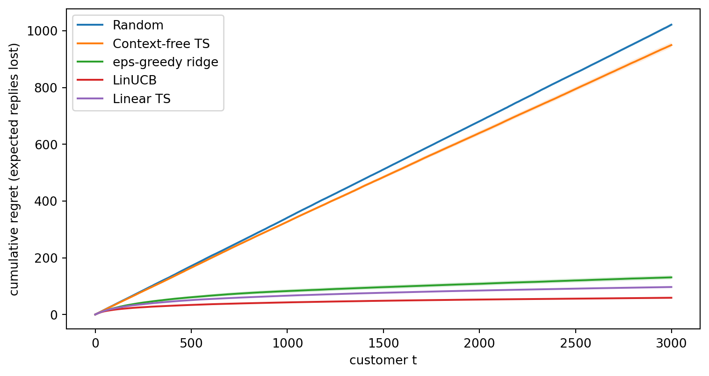
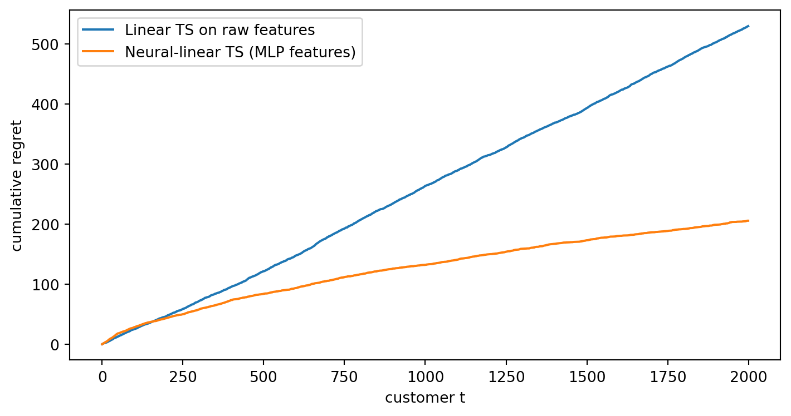
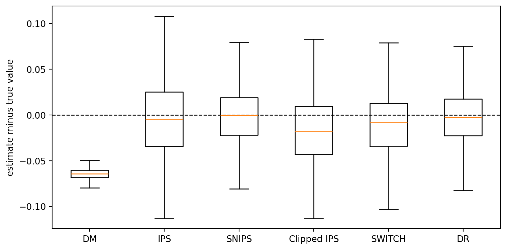
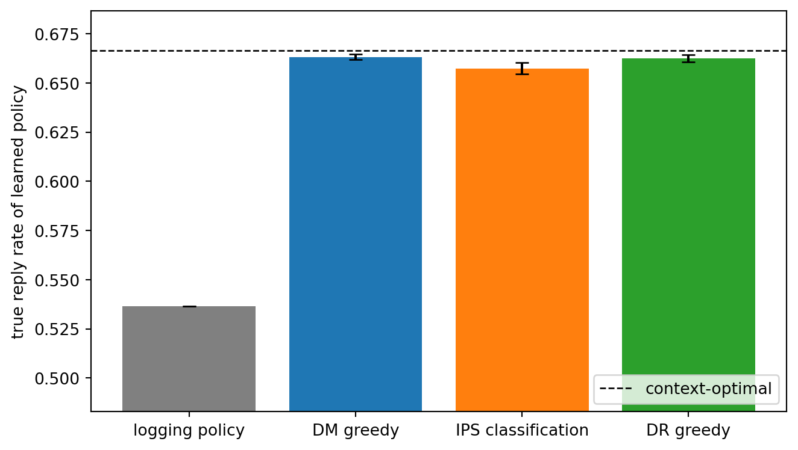

The multi-armed bandits of Chapter 253 search for the single best arm. Most real decisions are personal. The best headline for a sports fan is not the best headline for a gardener, and the best reminder message for a customer who replies within minutes is not the best one for a customer who ignores most texts. A contextual bandit observes side information (the context) before each decision and learns a policy, a mapping from contexts to actions. It is still a bandit, because only the reward of the chosen action is revealed and actions do not change future contexts. Once actions start to change the state of the world, the problem becomes full reinforcement learning, the subject of Chapter 255.
Contextual bandits also raise a question that the plain bandit can mostly ignore: how good would a different policy have been? A company that has been running a recommendation policy for a year has a large log of contexts, actions, and rewards. Before deploying a new policy it wants to estimate that policy’s value from the old log, without an online experiment. This is off-policy evaluation (OPE), and it turns out to be a causal inference problem in disguise, solvable exactly when the old policy logged the probabilities of its own choices.
This chapter develops both halves. We formalize the setting, build LinUCB and linear Thompson sampling from scratch, extend them to learned representations, and touch on policy-class methods. We then derive the main off-policy estimators (inverse propensity scoring, its self-normalized and clipped variants, the direct method, doubly robust, and SWITCH), verify their bias and variance numerically, show how they fail without overlap, and use them to learn a policy from logs. The running example comes from customer messaging: each customer has a few behavioral features, the system chooses one of five messages, and the reward is whether the customer replies. An R treatment of contextual bandits appears in Advanced Data Analysis.
254.1 The Formal Setting
At each round \(t = 1, \dots, T\):
A context \(x_t \in \mathcal{X}\) is drawn i.i.d. from an unknown distribution \(D\).
The learner chooses an action \(a_t \in \mathcal{A} = \{1, \dots, K\}\), possibly at random.
The learner observes the reward \(r_t\) of that action only, with \(\mathbb{E}[r_t \mid x_t, a_t] = f(x_t, a_t)\).
A policy\(\pi\) maps a context to a distribution over actions, \(\pi(a \mid x)\). Its value is the expected reward when actions are chosen by \(\pi\), \[
V(\pi) = \mathbb{E}_{x \sim D}\, \mathbb{E}_{a \sim \pi(\cdot \mid x)} \big[ f(x, a) \big].
\] The optimal policy is greedy with respect to the true reward function, \(\pi^*(x) = \arg\max_a f(x, a)\), and regret is measured against it, \[
R_T = \sum_{t=1}^{T} \Big( f\big(x_t, \pi^*(x_t)\big) - f(x_t, a_t) \Big).
\] Two modeling stances lead to two algorithm families. The realizable stance assumes \(f\) belongs to a known function class, typically linear, and estimates it with confidence sets or posteriors. The agnostic stance makes no assumption about \(f\) and instead competes with the best policy in a fixed class \(\Pi\), such as decision trees or linear classifiers. LinUCB and Thompson sampling are realizable methods. EXP4 and its descendants are agnostic.
A useful reframing: a contextual bandit is supervised learning with partial labels. For each example, the learner sees one entry of the reward vector \((f(x, 1), \dots, f(x, K))\), and which entry it sees is determined by its own choice. That is why exploration is still needed, and why the probability with which each action was chosen becomes the key piece of bookkeeping later in the chapter.
254.2 LinUCB
The most influential contextual algorithm assumes each action’s expected reward is linear in a feature vector. In the disjoint model of Li, Chu, Langford, and Schapire (2010) each arm has its own coefficient vector, \(f(x, a) = x^\top \theta_a\), with \(x \in \mathbb{R}^d\) (including an intercept). After observing the rounds in which arm \(a\) was played, ridge regression gives \[
A_a = \lambda I + \sum_{s : a_s = a} x_s x_s^\top,
\qquad
b_a = \sum_{s : a_s = a} r_s x_s,
\qquad
\hat\theta_a = A_a^{-1} b_a .
\] The prediction for a new context has standard error proportional to \(\sqrt{x^\top A_a^{-1} x}\), which is large in directions of feature space where arm \(a\) has little data. LinUCB adds that width as an optimism bonus, \[
a_t = \arg\max_a \Big( x_t^\top \hat\theta_a + \alpha \sqrt{x_t^\top A_a^{-1} x_t} \Big),
\] which is UCB1 with the scalar count \(N_a\) replaced by the design matrix \(A_a\). Exploration is now directed in feature space. An arm is explored for a customer when that customer is unlike the customers on whom the arm has been tried, even if the arm has been tried many times overall. Abbasi-Yadkori, Pál, and Szepesvári (2011) derived a self-normalized confidence ellipsoid that makes the width rigorous and yields regret \(\tilde O(d\sqrt{T})\), independent of the number of contexts. Chu, Li, Reyzin, and Schapire (2011) analyze a closely related variant. In practice \(\alpha\) is tuned, and the inverse \(A_a^{-1}\) is maintained incrementally with the Sherman-Morrison formula, so each update costs \(O(d^2)\).
254.3 Linear Thompson Sampling
Thompson sampling carries over directly. Put a Gaussian prior on \(\theta_a\) and treat the reward noise as Gaussian with scale \(v\). The posterior after the ridge statistics above is \[
\theta_a \mid \text{data} \sim \mathcal{N}\big(\hat\theta_a,\ v^2 A_a^{-1}\big).
\] Sample \(\tilde\theta_a\) from each posterior and play \(\arg\max_a x_t^\top \tilde\theta_a\). Agrawal and Goyal (2013) proved regret \(\tilde O(d^{3/2}\sqrt{T})\) for this algorithm with a suitably inflated \(v\). In practice \(v\) is set near the reward noise scale. For disjoint arms there is a shortcut worth knowing: the sampled score \(x^\top\tilde\theta_a\) is itself Gaussian with mean \(x^\top\hat\theta_a\) and variance \(v^2 x^\top A_a^{-1} x\), so one scalar draw per arm replaces a \(d\)-dimensional draw. The code below uses that shortcut.
254.4 A Messaging Simulation
The environment follows the customer-messaging example. Each customer has four standardized behavioral features (for example, how many messages they have read, how fast they usually respond), and there are five messages. The true reply probability is logistic in the features with message-specific coefficients, so different messages win for different customers. The algorithms use linear models, which are slightly misspecified for a logistic truth. That is realistic, and it lets us see whether the linear approximation is good enough to rank actions. We compare uniform random choice, a non-contextual Beta-Bernoulli Thompson sampler that ignores the features, \(\varepsilon\)-greedy on per-arm ridge regressions, LinUCB, and linear Thompson sampling, averaging over 50 runs of 3000 customers.
Code
import numpy as npimport pandas as pdimport matplotlib.pyplot as pltfrom scipy.special import expit, softmaxpd.set_option("display.width", 120)rng0 = np.random.default_rng(622)D_FEAT, K_MSG =4, 5TRUE_BIAS = np.array([-1.0, -1.2, -0.9, -1.4, -1.1])TRUE_COEF = rng0.normal(0, 0.9, size=(K_MSG, D_FEAT))def reply_prob(X):"""True reply probability for every message, shape (n, K)."""return expit(TRUE_BIAS + X @ TRUE_COEF.T)def add_intercept(X):return np.concatenate([np.ones(X.shape[:-1] + (1,)), X], axis=-1)def run_contextual(kind, T=3000, R=50, seed=0, alpha=1.0, v=0.5, eps=0.05, lam=1.0): rng = np.random.default_rng(seed) d = D_FEAT +1 Ainv = np.tile(np.eye(d) / lam, (R, K_MSG, 1, 1)) # per-run, per-arm inverse b = np.zeros((R, K_MSG, d)) S, N = np.zeros((R, K_MSG)), np.zeros((R, K_MSG)) # for context-free TS rows = np.arange(R) regret, cum = np.zeros((R, T)), np.zeros(R)for t inrange(T): X = rng.normal(size=(R, D_FEAT)) P = reply_prob(X) x = add_intercept(X)if kind =="Random": a = rng.integers(0, K_MSG, R)elif kind =="Context-free TS": a = np.argmax(rng.beta(S +1, N - S +1), axis=1)else: theta = np.einsum("rkij,rkj->rki", Ainv, b) mean = np.einsum("rki,ri->rk", theta, x) width = np.sqrt(np.einsum("ri,rkij,rj->rk", x, Ainv, x))if kind =="LinUCB": score = mean + alpha * widthelif kind =="Linear TS": score = mean + v * width * rng.normal(size=width.shape)else: # epsilon-greedy on ridge estimates score = np.where(rng.random((R, 1)) < eps, rng.random((R, K_MSG)), mean) a = np.argmax(score, axis=1) r = (rng.random(R) < P[rows, a]).astype(float)# Sherman-Morrison update of the chosen arm's inverse design matrix. Ai = Ainv[rows, a] Ax = np.einsum("rij,rj->ri", Ai, x) Ainv[rows, a] = Ai - np.einsum("ri,rj->rij", Ax, Ax) / (1+ np.einsum("ri,ri->r", x, Ax))[:, None, None] b[rows, a] += r[:, None] * x S[rows, a] += r N[rows, a] +=1 cum += P.max(1) - P[rows, a] regret[:, t] = cumreturn regretkinds = ["Random", "Context-free TS", "eps-greedy ridge", "LinUCB", "Linear TS"]cb_res = {k: run_contextual(k, seed=i) for i, k inenumerate(kinds)}fig, ax = plt.subplots(figsize=(8, 4.3))for k, reg in cb_res.items(): m, se = reg.mean(0), reg.std(0) / np.sqrt(reg.shape[0]) ax.plot(m, label=k) ax.fill_between(np.arange(len(m)), m -2* se, m +2* se, alpha=0.15)ax.set_xlabel("customer t")ax.set_ylabel("cumulative regret (expected replies lost)")ax.legend()plt.tight_layout()plt.show()Xbig = rng0.normal(size=(200_000, D_FEAT))Pbig = reply_prob(Xbig)print(f"value of best single message: {Pbig.mean(0).max():.3f}, "f"value of context-optimal policy: {Pbig.max(1).mean():.3f}")print(pd.Series({k: v[:, -1].mean() for k, v in cb_res.items()}, name="regret at T").round(1))

Figure 254.1: Cumulative regret against the context-optimal message for five policies on the simulated messaging problem (50 runs, shaded bands are plus or minus two standard errors). Ignoring context caps performance at the best single message, so its regret grows linearly. The contextual methods learn which message suits which customer.
value of best single message: 0.373, value of context-optimal policy: 0.667
Random 1021.2
Context-free TS 949.5
eps-greedy ridge 131.2
LinUCB 59.3
Linear TS 97.2
Name: regret at T, dtype: float64
The two printed values explain the shape of the context-free curve in Figure 254.1. Even a perfect non-contextual learner can only find the best single message, and the gap between that and the context-optimal policy is paid on every customer, so its regret grows linearly no matter how well it explores. The contextual methods close that gap. LinUCB and linear Thompson sampling bend toward a sublinear curve because they direct exploration toward customers whose features are poorly covered for a given message. The \(\varepsilon\)-greedy learner also benefits from context but keeps paying for undirected exploration. That the linear models work despite the logistic truth illustrates a general point: a policy only needs to rank actions correctly, which is a weaker requirement than estimating rewards correctly.
254.5 Neural and Representation-Based Contextual Bandits
Linear models in raw features fail when the reward depends on interactions or other nonlinear structure. The obvious remedy, replacing the linear model with a neural network, runs into a problem: the exploration machinery needs a calibrated measure of uncertainty, and a neural network trained by gradient descent does not provide one. Several approaches have been studied.
Neural-linear. Riquelme, Tucker, and Snoek (2018) benchmarked many approximate Bayesian deep networks for Thompson sampling and found that a simple decoupling works robustly: train a network to predict rewards, treat its last hidden layer \(\phi(x, a)\) as a feature map, and run exact Bayesian linear regression (linear Thompson sampling) on top of those features. The network supplies the representation, and the linear layer supplies the uncertainty.
NeuralUCB and Neural Thompson Sampling. Zhou, Li, and Gu (2020) and Zhang, Zhou, Li, and Gu (2021) use the gradient of the network output, \(g(x, a) = \nabla_\theta h_\theta(x, a)\), as the feature vector in a LinUCB-style width \(\sqrt{g^\top Z^{-1} g}\) or a Gaussian sampling variance, with regret guarantees in the neural tangent kernel regime.
Regression-oracle reductions. Foster and Rakhlin (2020) showed with SquareCB that any online regression model can be turned into a near-optimal contextual bandit by sampling actions with probabilities inversely related to their predicted gap from the best action. This separates the model, which can be anything, from the exploration rule, which is a few lines.
The next simulation uses a nonlinear environment. Customers have two features, and each of four messages works best in a different ring of feature space (by distance from the origin), so no linear function of the raw features can rank the messages. We compare linear Thompson sampling on raw features with a neural-linear Thompson sampler whose features come from a small scikit-learn network retrained on a doubling schedule.
Code
from sklearn.neural_network import MLPRegressorRING_CENTERS = np.array([0.2, 0.7, 1.2, 1.8])K_RING =len(RING_CENTERS)def ring_prob(X): rad = np.linalg.norm(X, axis=-1, keepdims=True)return expit(1.0-6.0* (rad - RING_CENTERS) **2)def onehot_inputs(X, K):"""Stack [x, e_a] for every action: shape (n, K, d + K).""" n = X.shape[0] eye = np.broadcast_to(np.eye(K), (n, K, K))return np.concatenate([np.repeat(X[:, None, :], K, axis=1), eye], axis=2)def neural_linear_ts(T=2000, seed=0, hidden=32, v=0.3, lam=1.0): rng = np.random.default_rng(seed) X_all = rng.normal(size=(T, 2)) *0.9 P_all = ring_prob(X_all) net = MLPRegressor(hidden_layer_sizes=(hidden,), alpha=1e-3, max_iter=400, learning_rate_init=0.01, random_state=seed) phi =None inputs, rewards, regret = [], [], np.zeros(T) retrain_at = {50, 100, 200, 400, 800, 1600} cum =0.0for t inrange(T): Z = onehot_inputs(X_all[t:t +1], K_RING)[0] # (K, d + K)if phi isNone: a = rng.integers(K_RING)else: F = phi(Z) theta = mu + v * (L @ rng.normal(size=F.shape[1])) a =int(np.argmax(F @ theta)) r =float(rng.random() < P_all[t, a]) inputs.append(Z[a]) rewards.append(r) cum += P_all[t].max() - P_all[t, a] regret[t] = cumif t +1in retrain_at: net.fit(np.array(inputs), np.array(rewards)) W, c = net.coefs_[0], net.intercepts_[0] phi =lambda Zin, W=W, c=c: np.column_stack( [np.ones(len(Zin)), np.maximum(Zin @ W + c, 0)]) Fh = phi(np.array(inputs)) prec = lam * np.eye(Fh.shape[1]) + Fh.T @ Fh bvec = Fh.T @ np.array(rewards)elif phi isnotNone: f = phi(Z[a:a +1])[0] prec += np.outer(f, f) bvec += r * fif phi isnotNone: cov = np.linalg.inv(prec) mu = cov @ bvec L = np.linalg.cholesky(cov +1e-10* np.eye(len(cov)))return regretdef linear_ts_ring(T=2000, seed=0, v=0.3, lam=1.0): rng = np.random.default_rng(seed) X_all = rng.normal(size=(T, 2)) *0.9 P_all = ring_prob(X_all) d =3 Ainv = np.tile(np.eye(d) / lam, (K_RING, 1, 1)) b = np.zeros((K_RING, d)) cum, regret =0.0, np.zeros(T)for t inrange(T): x = np.r_[1.0, X_all[t]] mean = np.einsum("kij,j,ki->k", Ainv, x, b) width = np.sqrt(np.einsum("i,kij,j->k", x, Ainv, x)) a =int(np.argmax(mean + v * width * rng.normal(size=K_RING))) r =float(rng.random() < P_all[t, a]) Ax = Ainv[a] @ x Ainv[a] -= np.outer(Ax, Ax) / (1+ x @ Ax) b[a] += r * x cum += P_all[t].max() - P_all[t, a] regret[t] = cumreturn regretseeds = [0, 1, 2]reg_lin = np.mean([linear_ts_ring(seed=s) for s in seeds], axis=0)reg_nl = np.mean([neural_linear_ts(seed=s) for s in seeds], axis=0)fig, ax = plt.subplots(figsize=(7.5, 4))ax.plot(reg_lin, label="Linear TS on raw features")ax.plot(reg_nl, label="Neural-linear TS (MLP features)")ax.set_xlabel("customer t")ax.set_ylabel("cumulative regret")ax.legend()plt.tight_layout()plt.show()print(f"final regret: linear TS = {reg_lin[-1]:.1f}, neural-linear TS = {reg_nl[-1]:.1f}")

Figure 254.2: Cumulative regret on a nonlinear problem in which each message is best in a different ring of feature space (mean over 3 runs). Linear Thompson sampling on raw features cannot represent the rings and its regret grows linearly. Neural-linear Thompson sampling learns a representation with a small network and runs Bayesian linear regression on its hidden layer.
final regret: linear TS = 530.0, neural-linear TS = 206.1
The neural-linear learner starts behind, because it chooses at random until its first network fit and its early representations are poor. Once the network has seen a few hundred customers, its hidden units encode distance from the origin, the linear posterior on top of them becomes informative, and the regret curve flattens. The linear learner never gets there because the ranking it needs is not a linear function of its features. The lesson generalizes: representation learning and exploration are separable concerns, and the cheapest way to get calibrated exploration from a deep model is often to keep the last layer Bayesian.
254.6 Policy-Class Methods: EXP4 and Beyond
The agnostic view asks the learner to compete with the best of a set of \(N\) policies (or “experts”) without assuming anything about the reward function. EXP4 (Auer, Cesa-Bianchi, Freund, and Schapire, 2002) runs the exponential-weights idea of EXP3 at the level of policies. Each round, every policy recommends a distribution over actions, EXP4 mixes them according to its weights, samples an action, and credits every policy with an importance-weighted estimate of the reward it would have earned. Its regret is \(O(\sqrt{TK\log N})\), logarithmic in the number of policies, so it can compete with enormous classes. The catch is computation, since it maintains a weight for every policy. Langford and Zhang (2007) gave the oracle-based Epoch-Greedy algorithm, and Agarwal et al. (2014) gave an algorithm that reaches the optimal \(\sqrt{TK\log N}\) rate while calling a supervised cost-sensitive classification oracle only rarely. These reductions are the basis of production systems that run contextual bandits on top of off-the-shelf learners. Bietti, Agarwal, and Langford (2021) compared these approaches across hundreds of datasets and found that simple greedy-plus-regression and regression-oracle methods are strong practical defaults.
254.7 Off-Policy Evaluation
Now suppose the decisions have already been made. A logging policy\(\mu\) (sometimes called the behavior policy) produced a dataset \[
\mathcal{D} = \{(x_i, a_i, r_i, p_i)\}_{i=1}^{n},
\qquad a_i \sim \mu(\cdot \mid x_i),
\qquad p_i = \mu(a_i \mid x_i),
\] where \(p_i\) is the propensity of the action that was taken. We want the value \(V(\pi)\) of a different target policy\(\pi\). The difficulty is that \(\pi\) would often have chosen an action other than \(a_i\), and the reward of that action was never observed. This is the fundamental problem of causal inference in another form: the unobserved rewards are counterfactual outcomes.
254.7.1 Direct method
The direct method (DM) fits a reward model \(\hat f(x, a)\) to the logged data and plugs it in: \[
\hat V_{\text{DM}}(\pi) = \frac{1}{n}\sum_{i=1}^{n} \sum_{a} \pi(a \mid x_i)\, \hat f(x_i, a).
\] It has low variance, but it is biased whenever \(\hat f\) is wrong, and the bias is worst exactly where \(\pi\) and \(\mu\) disagree, because the model is extrapolating to actions that were rarely logged in those contexts. No amount of data removes bias from a misspecified model.
254.7.2 Inverse propensity scoring
Inverse propensity scoring (IPS) reweights each logged reward by how much more (or less) likely the target policy is to take the logged action, \[
\hat V_{\text{IPS}}(\pi) = \frac{1}{n}\sum_{i=1}^{n} w_i r_i,
\qquad
w_i = \frac{\pi(a_i \mid x_i)}{\mu(a_i \mid x_i)} .
\] This is the Horvitz and Thompson (1952) estimator from survey sampling. It is unbiased whenever \(\mu(a \mid x) > 0\) for every action that \(\pi\) might take, because \[
\mathbb{E}_{a \sim \mu}\Big[\frac{\pi(a \mid x)}{\mu(a \mid x)}\, f(x, a)\Big]
= \sum_a \mu(a \mid x)\,\frac{\pi(a \mid x)}{\mu(a \mid x)}\, f(x, a)
= \mathbb{E}_{a \sim \pi}[f(x, a)].
\] The price is variance. The weights can be huge when \(\mu\) rarely takes an action that \(\pi\) favors, and the variance scales with \(\mathbb{E}[w^2]\), which grows without bound as the overlap between the two policies shrinks.
254.7.3 Self-normalized IPS and clipping
Two cheap variance reductions trade a little bias for a lot of stability. Self-normalized IPS (SNIPS) divides by the realized sum of weights instead of \(n\), \[
\hat V_{\text{SNIPS}}(\pi) = \frac{\sum_i w_i r_i}{\sum_i w_i},
\] which is consistent, invariant to adding a constant to all rewards, and bounded by the range of the rewards. Swaminathan and Joachims (2015b) used it to build a more reliable counterfactual learning objective. Clipped IPS caps the weights at a threshold \(M\), using \(\min(w_i, M)\), as advocated by Bottou et al. (2013) for advertising systems. Clipping introduces a downward bias for nonnegative rewards in exchange for bounded variance.
254.7.4 Doubly robust
The doubly robust (DR) estimator of Dudík, Langford, and Li (2011) uses the reward model as a baseline and IPS to correct its errors: \[
\hat V_{\text{DR}}(\pi) = \frac{1}{n}\sum_{i=1}^{n}\Big[ \sum_a \pi(a \mid x_i)\,\hat f(x_i, a) + w_i\big(r_i - \hat f(x_i, a_i)\big) \Big].
\] The first term is the direct method, and the second is an IPS estimate of the model’s residual. If the propensities are correct, the correction term removes the model’s bias, so DR is unbiased however poor \(\hat f\) is. If instead the model is correct, the correction term has mean zero, so DR is consistent even with wrong propensities. Hence “doubly robust”. Its variance depends on the residuals \(r - \hat f\) rather than on the rewards themselves, so a good model shrinks the variance of the IPS part. Dudík, Erhan, Langford, and Li (2014) give the full bias and variance analysis.
254.7.5 SWITCH
Wang, Agarwal, and Dudík (2017) proved that IPS and DR can be far from minimax optimal when weights are large, and proposed SWITCH: use the importance-weighted term for actions whose weight is below a threshold \(\tau\), and switch to the model’s prediction for actions whose weight exceeds it, \[
\hat V_{\text{SWITCH}}(\pi) = \frac{1}{n}\sum_{i=1}^{n}\Big[ w_i r_i \,\mathbb{1}[w_i \le \tau] + \sum_{a} \pi(a \mid x_i)\, \hat f(x_i, a)\,\mathbb{1}\big[\tfrac{\pi(a \mid x_i)}{\mu(a \mid x_i)} > \tau\big] \Big].
\] SWITCH interpolates between IPS (\(\tau = \infty\)) and DM (\(\tau = 0\)), and \(\tau\) can be chosen by a bias-variance criterion.
254.8 A Numerical Check: Bias and Variance
We now test the estimators on the messaging environment, where the true value of any policy can be computed exactly from the reply probabilities. The logging policy is a softmax over a noisy “business rule” score, so every message has positive probability and the propensities are known. The target policy is greedy with respect to a ridge model fitted on a pilot sample, so it is deterministic and frequently disagrees with the logger. The reward model used by DM, DR, and SWITCH is deliberately misspecified: it is a linear probability model that uses only two of the four features. We draw 500 independent logs of 1000 customers each and apply every estimator to every log.
Code
NOISE_COEF = np.random.default_rng(1).normal(0, 0.8, size=(K_MSG, D_FEAT))def logging_probs(X, beta=1.0): score = TRUE_BIAS + X @ (TRUE_COEF + NOISE_COEF).T # a noisy business rulereturn softmax(beta * score, axis=-1)def ridge_fit(F, y, lam=1.0):return np.linalg.solve(F.T @ F + lam * np.eye(F.shape[1]), F.T @ y)def sample_log(n, beta, rng): X = rng.normal(size=(n, D_FEAT)) mu_p = logging_probs(X, beta) a = (rng.random((n, 1)) > np.cumsum(mu_p, axis=1)).sum(1) a = np.minimum(a, K_MSG -1) r = (rng.random(n) < reply_prob(X)[np.arange(n), a]).astype(float)return X, a, r, mu_prng = np.random.default_rng(2026)# Target policy: greedy on a per-arm ridge model fitted to a pilot log.Xp, ap, rp, _ = sample_log(4000, 1.0, rng)target_coef = np.array([ridge_fit(add_intercept(Xp[ap == k]), rp[ap == k]) for k inrange(K_MSG)])def target_action(X):return np.argmax(add_intercept(X) @ target_coef.T, axis=1)# Misspecified reward model for DM / DR / SWITCH: intercept + first two features.def feats_small(X):return add_intercept(X[..., :2])Xq, aq, rq, _ = sample_log(1000, 1.0, rng)dm_coef = np.array([ridge_fit(feats_small(Xq[aq == k]), rq[aq == k]) for k inrange(K_MSG)])def f_hat(X):return np.clip(feats_small(X) @ dm_coef.T, 0, 1)true_value = reply_prob(Xbig)[np.arange(len(Xbig)), target_action(Xbig)].mean()def ope_estimates(X, a, r, mu_p, clip=10.0, tau=10.0): n =len(a) idx = np.arange(n) pa = target_action(X) pi_logged = (a == pa).astype(float) w = pi_logged / mu_p[idx, a] fh = f_hat(X) dm_terms = fh[idx, pa] w_target =1.0/ mu_p[idx, pa] # weight the target action would getreturn {"DM": dm_terms.mean(),"IPS": np.mean(w * r),"SNIPS": np.sum(w * r) /max(np.sum(w), 1e-12),"Clipped IPS": np.mean(np.minimum(w, clip) * r),"SWITCH": np.mean(np.where(w_target <= tau, w * r, dm_terms)),"DR": np.mean(dm_terms + w * (r - fh[idx, a])), }def replicate(n_logs, n, beta, seed): rng = np.random.default_rng(seed)return pd.DataFrame([ope_estimates(*sample_log(n, beta, rng)) for _ inrange(n_logs)])est = replicate(500, 1000, 1.0, seed=3)err = est - true_valuefig, ax = plt.subplots(figsize=(8, 4))ax.boxplot([err[c] for c in err.columns], showfliers=False)ax.set_xticks(range(1, len(err.columns) +1), err.columns)ax.axhline(0, color="k", lw=1, ls="--")ax.set_ylabel("estimate minus true value")plt.tight_layout()plt.show()X_, a_, r_, mu_ = sample_log(200_000, 1.0, np.random.default_rng(9))logging_value = reply_prob(X_)[np.arange(len(a_)), a_].mean()print(f"true value of target policy = {true_value:.4f}, logging policy value = {logging_value:.4f}")print(pd.DataFrame({"bias": err.mean(), "std dev": err.std(),"RMSE": np.sqrt((err **2).mean())}).round(4))

Figure 254.3: Error of six off-policy estimators of the same target policy’s value over 500 independent logs of 1000 customers (zero is the true value). The direct method is precise but biased by its misspecified reward model. IPS is centered on the truth but noisy. Doubly robust stays centered with a narrower spread than IPS.
true value of target policy = 0.6622, logging policy value = 0.5366
bias std dev RMSE
DM -0.0644 0.0058 0.0646
IPS -0.0032 0.0472 0.0473
SNIPS -0.0023 0.0304 0.0304
Clipped IPS -0.0173 0.0371 0.0408
SWITCH -0.0105 0.0335 0.0350
DR -0.0027 0.0313 0.0314
Figure 254.3 and its table reproduce the theory. IPS has bias indistinguishable from zero but the largest spread. The direct method has the smallest spread but a systematic error that comes entirely from its misspecified model, and it would not shrink with more data. Doubly robust keeps the zero bias of IPS while cutting its standard deviation, because it only needs to importance-weight the residual of the reward model, which is smaller than the reward itself. SNIPS and clipping are slightly biased but more stable than plain IPS, and SWITCH lands between IPS and DM depending on how many target actions exceed its weight threshold. On a single log the right choice depends on mean squared error, which is why the RMSE column, not the bias column, is what a practitioner should read.
254.9 Overlap: When Off-Policy Evaluation Breaks
Every importance-weighted estimator needs overlap (also called positivity or common support): the logging policy must put nonnegligible probability on the actions the target policy would take. When the logger becomes nearly deterministic, the weights on the target’s actions explode, and the effective sample size \(\big(\sum_i w_i\big)^2 / \sum_i w_i^2\) collapses. The next experiment sharpens the logging softmax step by step and tracks each estimator’s RMSE.
Figure 254.4: Effect of overlap. As the logging policy sharpens (larger inverse temperature), the propensity of the target policy’s actions falls, the effective sample size of importance weighting shrinks (right), and the RMSE of IPS explodes (left, 300 logs of 1000 customers per setting). Doubly robust degrades more slowly, while SNIPS and SWITCH avoid the explosion by bounding or bypassing large weights.
The direct method’s error barely moves with overlap, because it never uses the propensities, but it never escapes its bias either. IPS and DR, which multiply by raw weights, deteriorate sharply as the effective sample size falls, DR less so because it weights residuals rather than rewards. SNIPS cannot leave the range of the rewards, so its error saturates. SWITCH sidesteps large weights by construction, falling back on the reward model exactly where overlap is poor, so it trades the variance explosion for part of the model’s bias. These behaviors are features of a specific instance, and their ranking can change with the reward model and the target policy, but the qualitative pattern is general. Before trusting any off-policy estimate, report the effective sample size and the distribution of weights. If the target policy mostly takes actions the logger almost never took, no estimator can rescue the evaluation, and the honest answer is that the log does not contain the information needed.
254.10 Off-Policy Learning
Off-policy evaluation turns directly into off-policy learning: choose the policy in a class \(\Pi\) that maximizes an estimated value, \[
\hat\pi = \arg\max_{\pi \in \Pi} \hat V(\pi).
\] With IPS this is a weighted classification problem. For deterministic policies, \(\hat V_{\text{IPS}}(\pi) = \frac{1}{n}\sum_i \frac{r_i}{p_i}\mathbb{1}[\pi(x_i) = a_i]\), so maximizing it is the same as training a classifier to predict the logged action, with sample weight \(r_i/p_i\). With DR the same reduction uses per-action pseudo-outcomes \[
\Gamma_i(a) = \hat f(x_i, a) + \frac{\mathbb{1}[a_i = a]}{p_i}\big(r_i - \hat f(x_i, a_i)\big),
\] which are unbiased for \(f(x_i, a)\) and can be fed to any cost-sensitive learner. Athey and Wager (2021) analyze this doubly robust policy learning and prove regret bounds in terms of the complexity of \(\Pi\). Swaminathan and Joachims (2015a) added a variance penalty to IPS learning (counterfactual risk minimization), because maximizing a noisy estimate favors policies whose estimates happen to be inflated. Joachims, Swaminathan, and de Rijke (2018) scaled the idea to deep networks with a self-normalized objective. Pessimism, which maximizes a lower confidence bound on value rather than the estimate itself, is the modern framing of the same concern.
The simulation learns three policies from a single log of 5000 customers and measures each policy’s true value: greedy on a reward regression (DM), IPS-weighted classification, and greedy on per-action regressions of the DR pseudo-outcomes with two-fold cross-fitting. Both importance-weighted learners clip the weights at 20, a standard stabilizer. Without it, the handful of customers with tiny logging propensities produce pseudo-outcomes in the hundreds that dominate the regression.
Code
from sklearn.linear_model import LogisticRegressiondef policy_value(coef_or_clf, kind):if kind =="classifier": acts = coef_or_clf.predict(Xbig)else: acts = np.argmax(add_intercept(Xbig) @ coef_or_clf.T, axis=1)return Pbig[np.arange(len(Xbig)), acts].mean()def learn_from_log(seed, n=5000): rng = np.random.default_rng(seed) X, a, r, mu_p = sample_log(n, 1.0, rng) F = add_intercept(X) p = np.maximum(mu_p[np.arange(n), a], 0.05) # clip importance weights at 20 dm_coef = np.array([ridge_fit(F[a == k], r[a == k]) for k inrange(K_MSG)]) pos = r >0 clf = LogisticRegression(max_iter=500) clf.fit(X[pos], a[pos], sample_weight=1.0/ p[pos]) folds = rng.integers(0, 2, n) fhat = np.zeros((n, K_MSG))for f in (0, 1): tr, te = folds != f, folds == f cf = np.array([ridge_fit(F[tr & (a == k)], r[tr & (a == k)]) for k inrange(K_MSG)]) fhat[te] = F[te] @ cf.T gamma = fhat.copy() gamma[np.arange(n), a] += (r - fhat[np.arange(n), a]) / p dr_coef = np.array([ridge_fit(F, gamma[:, k]) for k inrange(K_MSG)])return {"DM greedy": policy_value(dm_coef, "linear"),"IPS classification": policy_value(clf, "classifier"),"DR greedy": policy_value(dr_coef, "linear")}learned = pd.DataFrame([learn_from_log(s) for s inrange(20)])oracle_value = Pbig.max(1).mean()fig, ax = plt.subplots(figsize=(7, 4))names = ["logging policy"] +list(learned.columns)means = [logging_value] +list(learned.mean())sds = [0] +list(learned.std())ax.bar(names, means, yerr=sds, capsize=4, color=["grey", "C0", "C1", "C2"])ax.axhline(oracle_value, color="k", ls="--", lw=1, label="context-optimal")ax.set_ylim(min(means) *0.9, oracle_value *1.03)ax.set_ylabel("true reply rate of learned policy")ax.legend(loc="lower right")plt.tight_layout()plt.show()print(learned.agg(["mean", "std"]).T.round(4))

Figure 254.5: True value of policies learned from a single log of 5000 customers, averaged over 20 logs (error bars are one standard deviation). All three learners improve on the logging policy. IPS-weighted classification uses no reward model but is the noisiest. The dashed line is the context-optimal policy.
mean std
DM greedy 0.6632 0.0013
IPS classification 0.6574 0.0029
DR greedy 0.6625 0.0018
With a reasonably specified reward model and good overlap, greedy regression is hard to beat for learning, which matches the large-scale findings of Bietti, Agarwal, and Langford (2021). The DR learner performs about as well while keeping the guarantee that its targets are unbiased even when the model is wrong. IPS-weighted classification is model-free and therefore immune to misspecification, but it learns only from the customers who replied and pays for that in variance. In practice the choice depends on how much you trust the reward model, and the evaluation tools above should be used to check the learned policy on a held-out log before deployment.
254.11 What the Logging Policy Must Provide
Everything in this chapter after LinUCB depends on how the data were logged. The requirements are concrete.
Log the propensity at decision time. Record \(\mu(a_i \mid x_i)\) for the action actually taken, computed by the policy at the moment of the decision, not reconstructed later. Reconstructing propensities from a model of past behavior reintroduces the very bias IPS is meant to remove.
Randomize. A deterministic logger has propensity one for its own choice and zero for everything else, so nothing about other actions can be learned without strong modeling assumptions. Even a small exploration floor (for example, every action keeps at least a few percent probability) makes the log usable.
Ensure overlap with the policies you will want to evaluate. Overlap is a property of the pair \((\mu, \pi)\). A logger that never shows premium offers to new customers cannot evaluate a policy that does.
Log the context the policy actually saw. If the logger used a feature that was not recorded, the propensities are still valid, but any reward model that ignores the feature is confounded, and policies that depend on it cannot be evaluated.
Version everything. Record which policy version made each decision, and keep the reward definition and attribution window fixed. Mixing logs from several policies is fine if each record carries its own propensity.
Li, Chu, Langford, and Wang (2011) showed that with a uniformly random logger even a simple replay method (keep only the logged rounds where the target policy agrees with the log) gives unbiased offline evaluation of a contextual bandit algorithm. This was the evaluation methodology behind their news recommendation work.
254.12 Pitfalls and When to Use
Contextual bandit or full reinforcement learning? Use a contextual bandit when actions do not affect future contexts, or when that effect is small relative to the immediate reward. Recommending an article, choosing a message, or picking a bid are usually close enough. If the action changes what the customer will do next week (a discount that trains customers to wait for discounts), the bandit’s myopic objective is wrong, and the methods of Chapter 255 apply.
Do not tune exploration away. It is tempting to set \(\alpha\) or \(v\) to zero after launch because greedy looks better on today’s metrics. A greedy policy stops generating the data needed to notice drift or to evaluate the next policy offline, and its own logs have degenerate propensities.
Report effective sample size and weight diagnostics with every OPE estimate. A point estimate with no uncertainty is not an evaluation. Bootstrap the estimator over logged rounds, report the effective sample size, and look at the largest weights.
Bias versus variance is a choice, not a defect. IPS is unbiased and noisy, DM is precise and biased, and the rest interpolate. Choose by expected mean squared error, preferably with a data-driven selection procedure, and prefer DR as a default when a reasonable reward model exists.
Adaptive logs need care. A log produced by a learning bandit has propensities that changed over time. IPS with the logged propensities remains unbiased, but its variance can be badly behaved, and standard confidence intervals can fail. The adaptive weighting estimators discussed below were designed for this case.
254.13 State of the Art
Research since 2020 has pushed off-policy evaluation toward the action spaces and deployment constraints of real systems.
Large action spaces. When there are thousands of actions, almost every target action has a tiny logging propensity, and IPS variance explodes. Saito and Joachims (2022) introduced marginalized IPS (MIPS), which uses action embeddings and importance-weights the embedding rather than the action identity, staying unbiased under a no-direct-effect assumption with far smaller weights. Saito, Ren, and Joachims (2023) relaxed that assumption with OffCEM, which combines a cluster-level importance weight with a model of the within-cluster effect.
Slates and rankings. Recommendation interfaces show lists, not single items. Swaminathan et al. (2017) gave the pseudoinverse estimator for slates under an additive reward assumption, and Kiyohara et al. (2022) built doubly robust estimators for rankings under a cascade model of user behavior.
Better estimators and selection among them. Su, Dimakopoulou, Krishnamurthy, and Dudík (2020) derived doubly robust estimators with optimized shrinkage of the weights, and Udagawa et al. (2023) proposed choosing among estimators adaptively for the target policy at hand. Zhan, Hadad, Hirshberg, and Athey (2021) adapted the variance-stabilizing weights of adaptive experiments to evaluate policies from logs collected by contextual bandits.
Uncertainty and safe deployment. For high-stakes deployment, a confidence bound matters more than a point estimate. Thomas, Theocharous, and Ghavamzadeh (2015) developed high-confidence off-policy evaluation, Kuzborskij et al. (2021) gave confidence intervals based on self-normalized importance weighting that support selecting among policies, Sakhi, Alquier, and Chopin (2023) gave PAC-Bayesian guarantees for offline policy learning, and Taufiq et al. (2022) brought conformal prediction to OPE, producing intervals for the reward distribution of the target policy rather than only its mean.
Benchmarks. The Open Bandit Dataset of Saito, Aihara, Matsutani, and Narita (2021) released real logs from a fashion e-commerce platform collected by two different policies, which makes it possible to test OPE estimators against an on-policy ground truth.
Language model systems. Contextual bandits have entered large language model infrastructure as routers. Wang et al. (2025) describe a contextual-bandit system that assigns each query to one of several language models using query embeddings, balancing predicted quality, cost, and latency and updating from user feedback, which is exactly the setting of this chapter with models as actions. The same logging discipline applies: a router that records its propensities can evaluate a new routing policy offline before switching traffic to it.
254.14 References
Li, L., Chu, W., Langford, J., and Schapire, R. E. “A Contextual-Bandit Approach to Personalized News Article Recommendation.” Proceedings of the 19th International Conference on World Wide Web (WWW), 2010, 661-670. https://doi.org/10.1145/1772690.1772758
Chu, W., Li, L., Reyzin, L., and Schapire, R. E. “Contextual Bandits with Linear Payoff Functions.” Proceedings of the 14th International Conference on Artificial Intelligence and Statistics (AISTATS), PMLR 15, 2011, 208-214. https://proceedings.mlr.press/v15/chu11a.html
Abbasi-Yadkori, Y., Pál, D., and Szepesvári, C. “Improved Algorithms for Linear Stochastic Bandits.” Advances in Neural Information Processing Systems 24, 2011. https://papers.nips.cc/paper_files/paper/2011/hash/e1d5be1c7f2f456670de3d53c7b54f4a-Abstract.html
Agrawal, S. and Goyal, N. “Thompson Sampling for Contextual Bandits with Linear Payoffs.” Proceedings of the 30th International Conference on Machine Learning (ICML), PMLR 28(3), 2013, 127-135. https://proceedings.mlr.press/v28/agrawal13.html
Riquelme, C., Tucker, G., and Snoek, J. “Deep Bayesian Bandits Showdown: An Empirical Comparison of Bayesian Deep Networks for Thompson Sampling.” International Conference on Learning Representations (ICLR), 2018. https://openreview.net/forum?id=SyYe6k-CW
Zhou, D., Li, L., and Gu, Q. “Neural Contextual Bandits with UCB-based Exploration.” Proceedings of the 37th International Conference on Machine Learning (ICML), PMLR 119, 2020, 11492-11502. https://proceedings.mlr.press/v119/zhou20a.html
Zhang, W., Zhou, D., Li, L., and Gu, Q. “Neural Thompson Sampling.” International Conference on Learning Representations (ICLR), 2021. https://openreview.net/forum?id=tkAtoZkcUnm
Foster, D. and Rakhlin, A. “Beyond UCB: Optimal and Efficient Contextual Bandits with Regression Oracles.” Proceedings of the 37th International Conference on Machine Learning (ICML), PMLR 119, 2020, 3199-3210. https://proceedings.mlr.press/v119/foster20a.html
Auer, P., Cesa-Bianchi, N., Freund, Y., and Schapire, R. E. “The Nonstochastic Multiarmed Bandit Problem.” SIAM Journal on Computing 32(1), 2002, 48-77. https://doi.org/10.1137/S0097539701398375
Langford, J. and Zhang, T. “The Epoch-Greedy Algorithm for Multi-armed Bandits with Side Information.” Advances in Neural Information Processing Systems 20, 2007. https://papers.nips.cc/paper_files/paper/2007/hash/4b04a686b0ad13dce35fa99fa4161c65-Abstract.html
Agarwal, A., Hsu, D., Kale, S., Langford, J., Li, L., and Schapire, R. E. “Taming the Monster: A Fast and Simple Algorithm for Contextual Bandits.” Proceedings of the 31st International Conference on Machine Learning (ICML), PMLR 32(2), 2014, 1638-1646. https://proceedings.mlr.press/v32/agarwalb14.html
Bietti, A., Agarwal, A., and Langford, J. “A Contextual Bandit Bake-off.” Journal of Machine Learning Research 22(133), 2021, 1-49. https://www.jmlr.org/papers/v22/18-863.html
Horvitz, D. G. and Thompson, D. J. “A Generalization of Sampling Without Replacement from a Finite Universe.” Journal of the American Statistical Association 47(260), 1952, 663-685. https://doi.org/10.1080/01621459.1952.10483446
Dudík, M., Langford, J., and Li, L. “Doubly Robust Policy Evaluation and Learning.” Proceedings of the 28th International Conference on Machine Learning (ICML), 2011, 1097-1104. https://icml.cc/imls/conferences/2011/papers/554_icmlpaper.pdf
Dudík, M., Erhan, D., Langford, J., and Li, L. “Doubly Robust Policy Evaluation and Optimization.” Statistical Science 29(4), 2014, 485-511. https://doi.org/10.1214/14-STS500
Swaminathan, A. and Joachims, T. (2015a). “Batch Learning from Logged Bandit Feedback through Counterfactual Risk Minimization.” Journal of Machine Learning Research 16, 2015, 1731-1755. https://www.jmlr.org/papers/v16/swaminathan15a.html
Swaminathan, A. and Joachims, T. (2015b). “The Self-Normalized Estimator for Counterfactual Learning.” Advances in Neural Information Processing Systems 28, 2015. https://papers.nips.cc/paper_files/paper/2015/hash/39027dfad5138c9ca0c474d71db915c3-Abstract.html
Bottou, L., Peters, J., Quiñonero-Candela, J., Charles, D. X., Chickering, D. M., Portugaly, E., Ray, D., Simard, P., and Snelson, E. “Counterfactual Reasoning and Learning Systems: The Example of Computational Advertising.” Journal of Machine Learning Research 14, 2013, 3207-3260. https://www.jmlr.org/papers/v14/bottou13a.html
Wang, Y.-X., Agarwal, A., and Dudík, M. “Optimal and Adaptive Off-policy Evaluation in Contextual Bandits.” Proceedings of the 34th International Conference on Machine Learning (ICML), PMLR 70, 2017, 3589-3597. https://proceedings.mlr.press/v70/wang17a.html
Athey, S. and Wager, S. “Policy Learning with Observational Data.” Econometrica 89(1), 2021, 133-161. https://doi.org/10.3982/ECTA15732
Joachims, T., Swaminathan, A., and de Rijke, M. “Deep Learning with Logged Bandit Feedback.” International Conference on Learning Representations (ICLR), 2018. https://openreview.net/forum?id=SJaP_-xAb
Li, L., Chu, W., Langford, J., and Wang, X. “Unbiased Offline Evaluation of Contextual-Bandit-Based News Article Recommendation Algorithms.” Proceedings of the 4th ACM International Conference on Web Search and Data Mining (WSDM), 2011, 297-306. https://doi.org/10.1145/1935826.1935878
Saito, Y. and Joachims, T. “Off-Policy Evaluation for Large Action Spaces via Embeddings.” Proceedings of the 39th International Conference on Machine Learning (ICML), PMLR 162, 2022, 19089-19122. https://proceedings.mlr.press/v162/saito22a.html
Saito, Y., Ren, Q., and Joachims, T. “Off-Policy Evaluation for Large Action Spaces via Conjunct Effect Modeling.” Proceedings of the 40th International Conference on Machine Learning (ICML), PMLR 202, 2023, 29734-29759. https://proceedings.mlr.press/v202/saito23b.html
Swaminathan, A., Krishnamurthy, A., Agarwal, A., Dudík, M., Langford, J., Jose, D., and Zitouni, I. “Off-policy Evaluation for Slate Recommendation.” Advances in Neural Information Processing Systems 30, 2017. https://papers.nips.cc/paper_files/paper/2017/hash/5352696a9ca3397beb79f116f3a33991-Abstract.html
Kiyohara, H., Saito, Y., Matsuhiro, T., Narita, Y., Shimizu, N., and Yamamoto, Y. “Doubly Robust Off-Policy Evaluation for Ranking Policies under the Cascade Behavior Model.” Proceedings of the 15th ACM International Conference on Web Search and Data Mining (WSDM), 2022, 487-497. https://doi.org/10.1145/3488560.3498380
Su, Y., Dimakopoulou, M., Krishnamurthy, A., and Dudík, M. “Doubly Robust Off-Policy Evaluation with Shrinkage.” Proceedings of the 37th International Conference on Machine Learning (ICML), PMLR 119, 2020, 9167-9176. https://proceedings.mlr.press/v119/su20a.html
Udagawa, T., Kiyohara, H., Narita, Y., Saito, Y., and Tateno, K. “Policy-Adaptive Estimator Selection for Off-Policy Evaluation.” Proceedings of the AAAI Conference on Artificial Intelligence 37(8), 2023, 10025-10033. https://doi.org/10.1609/aaai.v37i8.26195
Zhan, R., Hadad, V., Hirshberg, D. A., and Athey, S. “Off-Policy Evaluation via Adaptive Weighting with Data from Contextual Bandits.” Proceedings of the 27th ACM SIGKDD Conference on Knowledge Discovery and Data Mining (KDD), 2021, 2125-2135. https://doi.org/10.1145/3447548.3467456
Thomas, P. S., Theocharous, G., and Ghavamzadeh, M. “High-Confidence Off-Policy Evaluation.” Proceedings of the AAAI Conference on Artificial Intelligence 29(1), 2015. https://doi.org/10.1609/aaai.v29i1.9541
Kuzborskij, I., Vernade, C., György, A., and Szepesvári, C. “Confident Off-Policy Evaluation and Selection through Self-Normalized Importance Weighting.” Proceedings of the 24th International Conference on Artificial Intelligence and Statistics (AISTATS), PMLR 130, 2021, 640-648. https://proceedings.mlr.press/v130/kuzborskij21a.html
Sakhi, O., Alquier, P., and Chopin, N. “PAC-Bayesian Offline Contextual Bandits with Guarantees.” Proceedings of the 40th International Conference on Machine Learning (ICML), PMLR 202, 2023, 29777-29799. https://proceedings.mlr.press/v202/sakhi23a.html
Taufiq, M. F., Ton, J.-F., Cornish, R., Teh, Y. W., and Doucet, A. “Conformal Off-Policy Prediction in Contextual Bandits.” Advances in Neural Information Processing Systems 35, 2022. https://papers.nips.cc/paper_files/paper/2022/hash/cc84bfabe6389d8883fc2071c848f62a-Abstract-Conference.html
Saito, Y., Aihara, S., Matsutani, M., and Narita, Y. “Open Bandit Dataset and Pipeline: Towards Realistic and Reproducible Off-Policy Evaluation.” Proceedings of the Neural Information Processing Systems Track on Datasets and Benchmarks 1, 2021. https://datasets-benchmarks-proceedings.neurips.cc/paper/2021/hash/33e75ff09dd601bbe69f351039152189-Abstract-round2.html
Wang, X., Liu, Y., Cheng, W., Zhao, X., Chen, Z., Yu, W., Fu, Y., and Chen, H. “MixLLM: Dynamic Routing in Mixed Large Language Models.” Proceedings of the 2025 Conference of the Nations of the Americas Chapter of the Association for Computational Linguistics (NAACL), 2025, 10912-10922. https://doi.org/10.18653/v1/2025.naacl-long.545
Lattimore, T. and Szepesvári, C. “Bandit Algorithms.” Cambridge University Press, 2020. https://doi.org/10.1017/9781108571401
How to cite this chapter
Nguyen, M. (2026). Contextual Bandits and Off-Policy Evaluation. In AI in Action: A Reference for Artificial Intelligence. https://mikenguyen13.github.io/ai_in_action/622-contextual-bandits-off-policy-evaluation.html
BibTeX
@incollection{nguyen2026aiinaction-622contextualbanditsoffpolicyevaluation,
author = {Nguyen, Mike},
title = {{Contextual Bandits and Off-Policy Evaluation}},
booktitle = {{AI in Action: A Reference for Artificial Intelligence}},
year = {2026},
url = {https://mikenguyen13.github.io/ai_in_action/622-contextual-bandits-off-policy-evaluation.html},
note = {Online book}
}
Source Code
# Contextual Bandits and Off-Policy Evaluation {#sec-contextual-bandits-ope}The multi-armed bandits of @sec-multi-armed-bandits search for the single best arm. Most real decisions are personal. The best headline for a sports fan is not the best headline for a gardener, and the best reminder message for a customer who replies within minutes is not the best one for a customer who ignores most texts. A **contextual bandit** observes side information (the *context*) before each decision and learns a *policy*, a mapping from contexts to actions. It is still a bandit, because only the reward of the chosen action is revealed and actions do not change future contexts. Once actions start to change the state of the world, the problem becomes full reinforcement learning, the subject of @sec-markov-decision-processes.Contextual bandits also raise a question that the plain bandit can mostly ignore: **how good would a different policy have been?** A company that has been running a recommendation policy for a year has a large log of contexts, actions, and rewards. Before deploying a new policy it wants to estimate that policy's value from the old log, without an online experiment. This is **off-policy evaluation** (OPE), and it turns out to be a causal inference problem in disguise, solvable exactly when the old policy logged the probabilities of its own choices.This chapter develops both halves. We formalize the setting, build LinUCB and linear Thompson sampling from scratch, extend them to learned representations, and touch on policy-class methods. We then derive the main off-policy estimators (inverse propensity scoring, its self-normalized and clipped variants, the direct method, doubly robust, and SWITCH), verify their bias and variance numerically, show how they fail without overlap, and use them to learn a policy from logs. The running example comes from customer messaging: each customer has a few behavioral features, the system chooses one of five messages, and the reward is whether the customer replies. An R treatment of contextual bandits appears in *Advanced Data Analysis*.## The Formal SettingAt each round $t = 1, \dots, T$:1. A context $x_t \in \mathcal{X}$ is drawn i.i.d. from an unknown distribution $D$.2. The learner chooses an action $a_t \in \mathcal{A} = \{1, \dots, K\}$, possibly at random.3. The learner observes the reward $r_t$ of that action only, with $\mathbb{E}[r_t \mid x_t, a_t] = f(x_t, a_t)$.A **policy** $\pi$ maps a context to a distribution over actions, $\pi(a \mid x)$. Its **value** is the expected reward when actions are chosen by $\pi$,$$V(\pi) = \mathbb{E}_{x \sim D}\, \mathbb{E}_{a \sim \pi(\cdot \mid x)} \big[ f(x, a) \big].$$The optimal policy is greedy with respect to the true reward function, $\pi^*(x) = \arg\max_a f(x, a)$, and regret is measured against it,$$R_T = \sum_{t=1}^{T} \Big( f\big(x_t, \pi^*(x_t)\big) - f(x_t, a_t) \Big).$$Two modeling stances lead to two algorithm families. The **realizable** stance assumes $f$ belongs to a known function class, typically linear, and estimates it with confidence sets or posteriors. The **agnostic** stance makes no assumption about $f$ and instead competes with the best policy in a fixed class $\Pi$, such as decision trees or linear classifiers. LinUCB and Thompson sampling are realizable methods. EXP4 and its descendants are agnostic.A useful reframing: a contextual bandit is supervised learning with partial labels. For each example, the learner sees one entry of the reward vector $(f(x, 1), \dots, f(x, K))$, and which entry it sees is determined by its own choice. That is why exploration is still needed, and why the probability with which each action was chosen becomes the key piece of bookkeeping later in the chapter.## LinUCBThe most influential contextual algorithm assumes each action's expected reward is linear in a feature vector. In the **disjoint** model of Li, Chu, Langford, and Schapire (2010) each arm has its own coefficient vector, $f(x, a) = x^\top \theta_a$, with $x \in \mathbb{R}^d$ (including an intercept). After observing the rounds in which arm $a$ was played, ridge regression gives$$A_a = \lambda I + \sum_{s : a_s = a} x_s x_s^\top,\qquadb_a = \sum_{s : a_s = a} r_s x_s,\qquad\hat\theta_a = A_a^{-1} b_a .$$The prediction for a new context has standard error proportional to $\sqrt{x^\top A_a^{-1} x}$, which is large in directions of feature space where arm $a$ has little data. LinUCB adds that width as an optimism bonus,$$a_t = \arg\max_a \Big( x_t^\top \hat\theta_a + \alpha \sqrt{x_t^\top A_a^{-1} x_t} \Big),$$which is UCB1 with the scalar count $N_a$ replaced by the design matrix $A_a$. Exploration is now directed in feature space. An arm is explored for a customer when that customer is unlike the customers on whom the arm has been tried, even if the arm has been tried many times overall. Abbasi-Yadkori, Pál, and Szepesvári (2011) derived a self-normalized confidence ellipsoid that makes the width rigorous and yields regret $\tilde O(d\sqrt{T})$, independent of the number of contexts. Chu, Li, Reyzin, and Schapire (2011) analyze a closely related variant. In practice $\alpha$ is tuned, and the inverse $A_a^{-1}$ is maintained incrementally with the Sherman-Morrison formula, so each update costs $O(d^2)$.## Linear Thompson SamplingThompson sampling carries over directly. Put a Gaussian prior on $\theta_a$ and treat the reward noise as Gaussian with scale $v$. The posterior after the ridge statistics above is$$\theta_a \mid \text{data} \sim \mathcal{N}\big(\hat\theta_a,\ v^2 A_a^{-1}\big).$$Sample $\tilde\theta_a$ from each posterior and play $\arg\max_a x_t^\top \tilde\theta_a$. Agrawal and Goyal (2013) proved regret $\tilde O(d^{3/2}\sqrt{T})$ for this algorithm with a suitably inflated $v$. In practice $v$ is set near the reward noise scale. For disjoint arms there is a shortcut worth knowing: the sampled score $x^\top\tilde\theta_a$ is itself Gaussian with mean $x^\top\hat\theta_a$ and variance $v^2 x^\top A_a^{-1} x$, so one scalar draw per arm replaces a $d$-dimensional draw. The code below uses that shortcut.## A Messaging SimulationThe environment follows the customer-messaging example. Each customer has four standardized behavioral features (for example, how many messages they have read, how fast they usually respond), and there are five messages. The true reply probability is logistic in the features with message-specific coefficients, so different messages win for different customers. The algorithms use linear models, which are slightly misspecified for a logistic truth. That is realistic, and it lets us see whether the linear approximation is good enough to rank actions. We compare uniform random choice, a non-contextual Beta-Bernoulli Thompson sampler that ignores the features, $\varepsilon$-greedy on per-arm ridge regressions, LinUCB, and linear Thompson sampling, averaging over 50 runs of 3000 customers.```{python}#| label: fig-622-linear-cb-regret#| fig-cap: "Cumulative regret against the context-optimal message for five policies on the simulated messaging problem (50 runs, shaded bands are plus or minus two standard errors). Ignoring context caps performance at the best single message, so its regret grows linearly. The contextual methods learn which message suits which customer."import numpy as npimport pandas as pdimport matplotlib.pyplot as pltfrom scipy.special import expit, softmaxpd.set_option("display.width", 120)rng0 = np.random.default_rng(622)D_FEAT, K_MSG =4, 5TRUE_BIAS = np.array([-1.0, -1.2, -0.9, -1.4, -1.1])TRUE_COEF = rng0.normal(0, 0.9, size=(K_MSG, D_FEAT))def reply_prob(X):"""True reply probability for every message, shape (n, K)."""return expit(TRUE_BIAS + X @ TRUE_COEF.T)def add_intercept(X):return np.concatenate([np.ones(X.shape[:-1] + (1,)), X], axis=-1)def run_contextual(kind, T=3000, R=50, seed=0, alpha=1.0, v=0.5, eps=0.05, lam=1.0): rng = np.random.default_rng(seed) d = D_FEAT +1 Ainv = np.tile(np.eye(d) / lam, (R, K_MSG, 1, 1)) # per-run, per-arm inverse b = np.zeros((R, K_MSG, d)) S, N = np.zeros((R, K_MSG)), np.zeros((R, K_MSG)) # for context-free TS rows = np.arange(R) regret, cum = np.zeros((R, T)), np.zeros(R)for t inrange(T): X = rng.normal(size=(R, D_FEAT)) P = reply_prob(X) x = add_intercept(X)if kind =="Random": a = rng.integers(0, K_MSG, R)elif kind =="Context-free TS": a = np.argmax(rng.beta(S +1, N - S +1), axis=1)else: theta = np.einsum("rkij,rkj->rki", Ainv, b) mean = np.einsum("rki,ri->rk", theta, x) width = np.sqrt(np.einsum("ri,rkij,rj->rk", x, Ainv, x))if kind =="LinUCB": score = mean + alpha * widthelif kind =="Linear TS": score = mean + v * width * rng.normal(size=width.shape)else: # epsilon-greedy on ridge estimates score = np.where(rng.random((R, 1)) < eps, rng.random((R, K_MSG)), mean) a = np.argmax(score, axis=1) r = (rng.random(R) < P[rows, a]).astype(float)# Sherman-Morrison update of the chosen arm's inverse design matrix. Ai = Ainv[rows, a] Ax = np.einsum("rij,rj->ri", Ai, x) Ainv[rows, a] = Ai - np.einsum("ri,rj->rij", Ax, Ax) / (1+ np.einsum("ri,ri->r", x, Ax))[:, None, None] b[rows, a] += r[:, None] * x S[rows, a] += r N[rows, a] +=1 cum += P.max(1) - P[rows, a] regret[:, t] = cumreturn regretkinds = ["Random", "Context-free TS", "eps-greedy ridge", "LinUCB", "Linear TS"]cb_res = {k: run_contextual(k, seed=i) for i, k inenumerate(kinds)}fig, ax = plt.subplots(figsize=(8, 4.3))for k, reg in cb_res.items(): m, se = reg.mean(0), reg.std(0) / np.sqrt(reg.shape[0]) ax.plot(m, label=k) ax.fill_between(np.arange(len(m)), m -2* se, m +2* se, alpha=0.15)ax.set_xlabel("customer t")ax.set_ylabel("cumulative regret (expected replies lost)")ax.legend()plt.tight_layout()plt.show()Xbig = rng0.normal(size=(200_000, D_FEAT))Pbig = reply_prob(Xbig)print(f"value of best single message: {Pbig.mean(0).max():.3f}, "f"value of context-optimal policy: {Pbig.max(1).mean():.3f}")print(pd.Series({k: v[:, -1].mean() for k, v in cb_res.items()}, name="regret at T").round(1))```The two printed values explain the shape of the context-free curve in @fig-622-linear-cb-regret. Even a perfect non-contextual learner can only find the best single message, and the gap between that and the context-optimal policy is paid on every customer, so its regret grows linearly no matter how well it explores. The contextual methods close that gap. LinUCB and linear Thompson sampling bend toward a sublinear curve because they direct exploration toward customers whose features are poorly covered for a given message. The $\varepsilon$-greedy learner also benefits from context but keeps paying for undirected exploration. That the linear models work despite the logistic truth illustrates a general point: a policy only needs to rank actions correctly, which is a weaker requirement than estimating rewards correctly.## Neural and Representation-Based Contextual BanditsLinear models in raw features fail when the reward depends on interactions or other nonlinear structure. The obvious remedy, replacing the linear model with a neural network, runs into a problem: the exploration machinery needs a calibrated measure of uncertainty, and a neural network trained by gradient descent does not provide one. Several approaches have been studied.- **Neural-linear.** Riquelme, Tucker, and Snoek (2018) benchmarked many approximate Bayesian deep networks for Thompson sampling and found that a simple decoupling works robustly: train a network to predict rewards, treat its last hidden layer $\phi(x, a)$ as a feature map, and run exact Bayesian linear regression (linear Thompson sampling) on top of those features. The network supplies the representation, and the linear layer supplies the uncertainty.- **NeuralUCB and Neural Thompson Sampling.** Zhou, Li, and Gu (2020) and Zhang, Zhou, Li, and Gu (2021) use the gradient of the network output, $g(x, a) = \nabla_\theta h_\theta(x, a)$, as the feature vector in a LinUCB-style width $\sqrt{g^\top Z^{-1} g}$ or a Gaussian sampling variance, with regret guarantees in the neural tangent kernel regime.- **Regression-oracle reductions.** Foster and Rakhlin (2020) showed with SquareCB that any online regression model can be turned into a near-optimal contextual bandit by sampling actions with probabilities inversely related to their predicted gap from the best action. This separates the model, which can be anything, from the exploration rule, which is a few lines.The next simulation uses a nonlinear environment. Customers have two features, and each of four messages works best in a different ring of feature space (by distance from the origin), so no linear function of the raw features can rank the messages. We compare linear Thompson sampling on raw features with a neural-linear Thompson sampler whose features come from a small scikit-learn network retrained on a doubling schedule.```{python}#| label: fig-622-neural-linear#| fig-cap: "Cumulative regret on a nonlinear problem in which each message is best in a different ring of feature space (mean over 3 runs). Linear Thompson sampling on raw features cannot represent the rings and its regret grows linearly. Neural-linear Thompson sampling learns a representation with a small network and runs Bayesian linear regression on its hidden layer."from sklearn.neural_network import MLPRegressorRING_CENTERS = np.array([0.2, 0.7, 1.2, 1.8])K_RING =len(RING_CENTERS)def ring_prob(X): rad = np.linalg.norm(X, axis=-1, keepdims=True)return expit(1.0-6.0* (rad - RING_CENTERS) **2)def onehot_inputs(X, K):"""Stack [x, e_a] for every action: shape (n, K, d + K).""" n = X.shape[0] eye = np.broadcast_to(np.eye(K), (n, K, K))return np.concatenate([np.repeat(X[:, None, :], K, axis=1), eye], axis=2)def neural_linear_ts(T=2000, seed=0, hidden=32, v=0.3, lam=1.0): rng = np.random.default_rng(seed) X_all = rng.normal(size=(T, 2)) *0.9 P_all = ring_prob(X_all) net = MLPRegressor(hidden_layer_sizes=(hidden,), alpha=1e-3, max_iter=400, learning_rate_init=0.01, random_state=seed) phi =None inputs, rewards, regret = [], [], np.zeros(T) retrain_at = {50, 100, 200, 400, 800, 1600} cum =0.0for t inrange(T): Z = onehot_inputs(X_all[t:t +1], K_RING)[0] # (K, d + K)if phi isNone: a = rng.integers(K_RING)else: F = phi(Z) theta = mu + v * (L @ rng.normal(size=F.shape[1])) a =int(np.argmax(F @ theta)) r =float(rng.random() < P_all[t, a]) inputs.append(Z[a]) rewards.append(r) cum += P_all[t].max() - P_all[t, a] regret[t] = cumif t +1in retrain_at: net.fit(np.array(inputs), np.array(rewards)) W, c = net.coefs_[0], net.intercepts_[0] phi =lambda Zin, W=W, c=c: np.column_stack( [np.ones(len(Zin)), np.maximum(Zin @ W + c, 0)]) Fh = phi(np.array(inputs)) prec = lam * np.eye(Fh.shape[1]) + Fh.T @ Fh bvec = Fh.T @ np.array(rewards)elif phi isnotNone: f = phi(Z[a:a +1])[0] prec += np.outer(f, f) bvec += r * fif phi isnotNone: cov = np.linalg.inv(prec) mu = cov @ bvec L = np.linalg.cholesky(cov +1e-10* np.eye(len(cov)))return regretdef linear_ts_ring(T=2000, seed=0, v=0.3, lam=1.0): rng = np.random.default_rng(seed) X_all = rng.normal(size=(T, 2)) *0.9 P_all = ring_prob(X_all) d =3 Ainv = np.tile(np.eye(d) / lam, (K_RING, 1, 1)) b = np.zeros((K_RING, d)) cum, regret =0.0, np.zeros(T)for t inrange(T): x = np.r_[1.0, X_all[t]] mean = np.einsum("kij,j,ki->k", Ainv, x, b) width = np.sqrt(np.einsum("i,kij,j->k", x, Ainv, x)) a =int(np.argmax(mean + v * width * rng.normal(size=K_RING))) r =float(rng.random() < P_all[t, a]) Ax = Ainv[a] @ x Ainv[a] -= np.outer(Ax, Ax) / (1+ x @ Ax) b[a] += r * x cum += P_all[t].max() - P_all[t, a] regret[t] = cumreturn regretseeds = [0, 1, 2]reg_lin = np.mean([linear_ts_ring(seed=s) for s in seeds], axis=0)reg_nl = np.mean([neural_linear_ts(seed=s) for s in seeds], axis=0)fig, ax = plt.subplots(figsize=(7.5, 4))ax.plot(reg_lin, label="Linear TS on raw features")ax.plot(reg_nl, label="Neural-linear TS (MLP features)")ax.set_xlabel("customer t")ax.set_ylabel("cumulative regret")ax.legend()plt.tight_layout()plt.show()print(f"final regret: linear TS = {reg_lin[-1]:.1f}, neural-linear TS = {reg_nl[-1]:.1f}")```The neural-linear learner starts behind, because it chooses at random until its first network fit and its early representations are poor. Once the network has seen a few hundred customers, its hidden units encode distance from the origin, the linear posterior on top of them becomes informative, and the regret curve flattens. The linear learner never gets there because the ranking it needs is not a linear function of its features. The lesson generalizes: representation learning and exploration are separable concerns, and the cheapest way to get calibrated exploration from a deep model is often to keep the last layer Bayesian.## Policy-Class Methods: EXP4 and BeyondThe agnostic view asks the learner to compete with the best of a set of $N$ policies (or "experts") without assuming anything about the reward function. **EXP4** (Auer, Cesa-Bianchi, Freund, and Schapire, 2002) runs the exponential-weights idea of EXP3 at the level of policies. Each round, every policy recommends a distribution over actions, EXP4 mixes them according to its weights, samples an action, and credits every policy with an importance-weighted estimate of the reward it would have earned. Its regret is $O(\sqrt{TK\log N})$, logarithmic in the number of policies, so it can compete with enormous classes. The catch is computation, since it maintains a weight for every policy. Langford and Zhang (2007) gave the oracle-based Epoch-Greedy algorithm, and Agarwal et al. (2014) gave an algorithm that reaches the optimal $\sqrt{TK\log N}$ rate while calling a supervised cost-sensitive classification oracle only rarely. These reductions are the basis of production systems that run contextual bandits on top of off-the-shelf learners. Bietti, Agarwal, and Langford (2021) compared these approaches across hundreds of datasets and found that simple greedy-plus-regression and regression-oracle methods are strong practical defaults.## Off-Policy EvaluationNow suppose the decisions have already been made. A **logging policy** $\mu$ (sometimes called the behavior policy) produced a dataset$$\mathcal{D} = \{(x_i, a_i, r_i, p_i)\}_{i=1}^{n},\qquad a_i \sim \mu(\cdot \mid x_i),\qquad p_i = \mu(a_i \mid x_i),$$where $p_i$ is the **propensity** of the action that was taken. We want the value $V(\pi)$ of a different **target policy** $\pi$. The difficulty is that $\pi$ would often have chosen an action other than $a_i$, and the reward of that action was never observed. This is the fundamental problem of causal inference in another form: the unobserved rewards are counterfactual outcomes.### Direct methodThe **direct method** (DM) fits a reward model $\hat f(x, a)$ to the logged data and plugs it in:$$\hat V_{\text{DM}}(\pi) = \frac{1}{n}\sum_{i=1}^{n} \sum_{a} \pi(a \mid x_i)\, \hat f(x_i, a).$$It has low variance, but it is biased whenever $\hat f$ is wrong, and the bias is worst exactly where $\pi$ and $\mu$ disagree, because the model is extrapolating to actions that were rarely logged in those contexts. No amount of data removes bias from a misspecified model.### Inverse propensity scoring**Inverse propensity scoring** (IPS) reweights each logged reward by how much more (or less) likely the target policy is to take the logged action,$$\hat V_{\text{IPS}}(\pi) = \frac{1}{n}\sum_{i=1}^{n} w_i r_i,\qquadw_i = \frac{\pi(a_i \mid x_i)}{\mu(a_i \mid x_i)} .$$This is the Horvitz and Thompson (1952) estimator from survey sampling. It is unbiased whenever $\mu(a \mid x) > 0$ for every action that $\pi$ might take, because$$\mathbb{E}_{a \sim \mu}\Big[\frac{\pi(a \mid x)}{\mu(a \mid x)}\, f(x, a)\Big]= \sum_a \mu(a \mid x)\,\frac{\pi(a \mid x)}{\mu(a \mid x)}\, f(x, a)= \mathbb{E}_{a \sim \pi}[f(x, a)].$$The price is variance. The weights can be huge when $\mu$ rarely takes an action that $\pi$ favors, and the variance scales with $\mathbb{E}[w^2]$, which grows without bound as the overlap between the two policies shrinks.### Self-normalized IPS and clippingTwo cheap variance reductions trade a little bias for a lot of stability. **Self-normalized IPS** (SNIPS) divides by the realized sum of weights instead of $n$,$$\hat V_{\text{SNIPS}}(\pi) = \frac{\sum_i w_i r_i}{\sum_i w_i},$$which is consistent, invariant to adding a constant to all rewards, and bounded by the range of the rewards. Swaminathan and Joachims (2015b) used it to build a more reliable counterfactual learning objective. **Clipped IPS** caps the weights at a threshold $M$, using $\min(w_i, M)$, as advocated by Bottou et al. (2013) for advertising systems. Clipping introduces a downward bias for nonnegative rewards in exchange for bounded variance.### Doubly robustThe **doubly robust** (DR) estimator of Dudík, Langford, and Li (2011) uses the reward model as a baseline and IPS to correct its errors:$$\hat V_{\text{DR}}(\pi) = \frac{1}{n}\sum_{i=1}^{n}\Big[ \sum_a \pi(a \mid x_i)\,\hat f(x_i, a) + w_i\big(r_i - \hat f(x_i, a_i)\big) \Big].$$The first term is the direct method, and the second is an IPS estimate of the model's residual. If the propensities are correct, the correction term removes the model's bias, so DR is unbiased however poor $\hat f$ is. If instead the model is correct, the correction term has mean zero, so DR is consistent even with wrong propensities. Hence "doubly robust". Its variance depends on the residuals $r - \hat f$ rather than on the rewards themselves, so a good model shrinks the variance of the IPS part. Dudík, Erhan, Langford, and Li (2014) give the full bias and variance analysis.### SWITCHWang, Agarwal, and Dudík (2017) proved that IPS and DR can be far from minimax optimal when weights are large, and proposed **SWITCH**: use the importance-weighted term for actions whose weight is below a threshold $\tau$, and switch to the model's prediction for actions whose weight exceeds it,$$\hat V_{\text{SWITCH}}(\pi) = \frac{1}{n}\sum_{i=1}^{n}\Big[ w_i r_i \,\mathbb{1}[w_i \le \tau] + \sum_{a} \pi(a \mid x_i)\, \hat f(x_i, a)\,\mathbb{1}\big[\tfrac{\pi(a \mid x_i)}{\mu(a \mid x_i)} > \tau\big] \Big].$$SWITCH interpolates between IPS ($\tau = \infty$) and DM ($\tau = 0$), and $\tau$ can be chosen by a bias-variance criterion.## A Numerical Check: Bias and VarianceWe now test the estimators on the messaging environment, where the true value of any policy can be computed exactly from the reply probabilities. The logging policy is a softmax over a noisy "business rule" score, so every message has positive probability and the propensities are known. The target policy is greedy with respect to a ridge model fitted on a pilot sample, so it is deterministic and frequently disagrees with the logger. The reward model used by DM, DR, and SWITCH is deliberately misspecified: it is a linear probability model that uses only two of the four features. We draw 500 independent logs of 1000 customers each and apply every estimator to every log.```{python}#| label: fig-622-ope-estimators#| fig-cap: "Error of six off-policy estimators of the same target policy's value over 500 independent logs of 1000 customers (zero is the true value). The direct method is precise but biased by its misspecified reward model. IPS is centered on the truth but noisy. Doubly robust stays centered with a narrower spread than IPS."NOISE_COEF = np.random.default_rng(1).normal(0, 0.8, size=(K_MSG, D_FEAT))def logging_probs(X, beta=1.0): score = TRUE_BIAS + X @ (TRUE_COEF + NOISE_COEF).T # a noisy business rulereturn softmax(beta * score, axis=-1)def ridge_fit(F, y, lam=1.0):return np.linalg.solve(F.T @ F + lam * np.eye(F.shape[1]), F.T @ y)def sample_log(n, beta, rng): X = rng.normal(size=(n, D_FEAT)) mu_p = logging_probs(X, beta) a = (rng.random((n, 1)) > np.cumsum(mu_p, axis=1)).sum(1) a = np.minimum(a, K_MSG -1) r = (rng.random(n) < reply_prob(X)[np.arange(n), a]).astype(float)return X, a, r, mu_prng = np.random.default_rng(2026)# Target policy: greedy on a per-arm ridge model fitted to a pilot log.Xp, ap, rp, _ = sample_log(4000, 1.0, rng)target_coef = np.array([ridge_fit(add_intercept(Xp[ap == k]), rp[ap == k]) for k inrange(K_MSG)])def target_action(X):return np.argmax(add_intercept(X) @ target_coef.T, axis=1)# Misspecified reward model for DM / DR / SWITCH: intercept + first two features.def feats_small(X):return add_intercept(X[..., :2])Xq, aq, rq, _ = sample_log(1000, 1.0, rng)dm_coef = np.array([ridge_fit(feats_small(Xq[aq == k]), rq[aq == k]) for k inrange(K_MSG)])def f_hat(X):return np.clip(feats_small(X) @ dm_coef.T, 0, 1)true_value = reply_prob(Xbig)[np.arange(len(Xbig)), target_action(Xbig)].mean()def ope_estimates(X, a, r, mu_p, clip=10.0, tau=10.0): n =len(a) idx = np.arange(n) pa = target_action(X) pi_logged = (a == pa).astype(float) w = pi_logged / mu_p[idx, a] fh = f_hat(X) dm_terms = fh[idx, pa] w_target =1.0/ mu_p[idx, pa] # weight the target action would getreturn {"DM": dm_terms.mean(),"IPS": np.mean(w * r),"SNIPS": np.sum(w * r) /max(np.sum(w), 1e-12),"Clipped IPS": np.mean(np.minimum(w, clip) * r),"SWITCH": np.mean(np.where(w_target <= tau, w * r, dm_terms)),"DR": np.mean(dm_terms + w * (r - fh[idx, a])), }def replicate(n_logs, n, beta, seed): rng = np.random.default_rng(seed)return pd.DataFrame([ope_estimates(*sample_log(n, beta, rng)) for _ inrange(n_logs)])est = replicate(500, 1000, 1.0, seed=3)err = est - true_valuefig, ax = plt.subplots(figsize=(8, 4))ax.boxplot([err[c] for c in err.columns], showfliers=False)ax.set_xticks(range(1, len(err.columns) +1), err.columns)ax.axhline(0, color="k", lw=1, ls="--")ax.set_ylabel("estimate minus true value")plt.tight_layout()plt.show()X_, a_, r_, mu_ = sample_log(200_000, 1.0, np.random.default_rng(9))logging_value = reply_prob(X_)[np.arange(len(a_)), a_].mean()print(f"true value of target policy = {true_value:.4f}, logging policy value = {logging_value:.4f}")print(pd.DataFrame({"bias": err.mean(), "std dev": err.std(),"RMSE": np.sqrt((err **2).mean())}).round(4))```@fig-622-ope-estimators and its table reproduce the theory. IPS has bias indistinguishable from zero but the largest spread. The direct method has the smallest spread but a systematic error that comes entirely from its misspecified model, and it would not shrink with more data. Doubly robust keeps the zero bias of IPS while cutting its standard deviation, because it only needs to importance-weight the residual of the reward model, which is smaller than the reward itself. SNIPS and clipping are slightly biased but more stable than plain IPS, and SWITCH lands between IPS and DM depending on how many target actions exceed its weight threshold. On a single log the right choice depends on mean squared error, which is why the RMSE column, not the bias column, is what a practitioner should read.## Overlap: When Off-Policy Evaluation BreaksEvery importance-weighted estimator needs **overlap** (also called positivity or common support): the logging policy must put nonnegligible probability on the actions the target policy would take. When the logger becomes nearly deterministic, the weights on the target's actions explode, and the effective sample size $\big(\sum_i w_i\big)^2 / \sum_i w_i^2$ collapses. The next experiment sharpens the logging softmax step by step and tracks each estimator's RMSE.```{python}#| label: fig-622-overlap#| fig-cap: "Effect of overlap. As the logging policy sharpens (larger inverse temperature), the propensity of the target policy's actions falls, the effective sample size of importance weighting shrinks (right), and the RMSE of IPS explodes (left, 300 logs of 1000 customers per setting). Doubly robust degrades more slowly, while SNIPS and SWITCH avoid the explosion by bounding or bypassing large weights."betas = [0.5, 1.0, 2.0, 4.0, 8.0]rmse_rows, ess_rows = {}, {}for j, beta inenumerate(betas): e = replicate(300, 1000, beta, seed=100+ j) - true_value rmse_rows[beta] = np.sqrt((e **2).mean()) Xb, ab, rb, mub = sample_log(20_000, beta, np.random.default_rng(50+ j)) wb = (ab == target_action(Xb)) / mub[np.arange(len(ab)), ab] ess_rows[beta] = wb.sum() **2/ (wb **2).sum() /len(wb)rmse_df = pd.DataFrame(rmse_rows).Tfig, axes = plt.subplots(1, 2, figsize=(12, 4))for c in ["DM", "IPS", "SNIPS", "SWITCH", "DR"]: axes[0].plot(betas, rmse_df[c], "o-", label=c)axes[0].set_xscale("log", base=2)axes[0].set_yscale("log")axes[0].set_xlabel("logging inverse temperature (log scale)")axes[0].set_ylabel("RMSE (log scale)")axes[0].legend()axes[1].plot(betas, list(ess_rows.values()), "o-", color="k")axes[1].set_xscale("log", base=2)axes[1].set_xlabel("logging inverse temperature (log scale)")axes[1].set_ylabel("effective sample size / n")plt.tight_layout()plt.show()print(rmse_df[["DM", "IPS", "SNIPS", "SWITCH", "DR"]].round(4))```The direct method's error barely moves with overlap, because it never uses the propensities, but it never escapes its bias either. IPS and DR, which multiply by raw weights, deteriorate sharply as the effective sample size falls, DR less so because it weights residuals rather than rewards. SNIPS cannot leave the range of the rewards, so its error saturates. SWITCH sidesteps large weights by construction, falling back on the reward model exactly where overlap is poor, so it trades the variance explosion for part of the model's bias. These behaviors are features of a specific instance, and their ranking can change with the reward model and the target policy, but the qualitative pattern is general. Before trusting any off-policy estimate, report the effective sample size and the distribution of weights. If the target policy mostly takes actions the logger almost never took, no estimator can rescue the evaluation, and the honest answer is that the log does not contain the information needed.## Off-Policy LearningOff-policy evaluation turns directly into **off-policy learning**: choose the policy in a class $\Pi$ that maximizes an estimated value,$$\hat\pi = \arg\max_{\pi \in \Pi} \hat V(\pi).$$With IPS this is a weighted classification problem. For deterministic policies, $\hat V_{\text{IPS}}(\pi) = \frac{1}{n}\sum_i \frac{r_i}{p_i}\mathbb{1}[\pi(x_i) = a_i]$, so maximizing it is the same as training a classifier to predict the logged action, with sample weight $r_i/p_i$. With DR the same reduction uses per-action pseudo-outcomes$$\Gamma_i(a) = \hat f(x_i, a) + \frac{\mathbb{1}[a_i = a]}{p_i}\big(r_i - \hat f(x_i, a_i)\big),$$which are unbiased for $f(x_i, a)$ and can be fed to any cost-sensitive learner. Athey and Wager (2021) analyze this doubly robust policy learning and prove regret bounds in terms of the complexity of $\Pi$. Swaminathan and Joachims (2015a) added a variance penalty to IPS learning (counterfactual risk minimization), because maximizing a noisy estimate favors policies whose estimates happen to be inflated. Joachims, Swaminathan, and de Rijke (2018) scaled the idea to deep networks with a self-normalized objective. Pessimism, which maximizes a lower confidence bound on value rather than the estimate itself, is the modern framing of the same concern.The simulation learns three policies from a single log of 5000 customers and measures each policy's true value: greedy on a reward regression (DM), IPS-weighted classification, and greedy on per-action regressions of the DR pseudo-outcomes with two-fold cross-fitting. Both importance-weighted learners clip the weights at 20, a standard stabilizer. Without it, the handful of customers with tiny logging propensities produce pseudo-outcomes in the hundreds that dominate the regression.```{python}#| label: fig-622-off-policy-learning#| fig-cap: "True value of policies learned from a single log of 5000 customers, averaged over 20 logs (error bars are one standard deviation). All three learners improve on the logging policy. IPS-weighted classification uses no reward model but is the noisiest. The dashed line is the context-optimal policy."from sklearn.linear_model import LogisticRegressiondef policy_value(coef_or_clf, kind):if kind =="classifier": acts = coef_or_clf.predict(Xbig)else: acts = np.argmax(add_intercept(Xbig) @ coef_or_clf.T, axis=1)return Pbig[np.arange(len(Xbig)), acts].mean()def learn_from_log(seed, n=5000): rng = np.random.default_rng(seed) X, a, r, mu_p = sample_log(n, 1.0, rng) F = add_intercept(X) p = np.maximum(mu_p[np.arange(n), a], 0.05) # clip importance weights at 20 dm_coef = np.array([ridge_fit(F[a == k], r[a == k]) for k inrange(K_MSG)]) pos = r >0 clf = LogisticRegression(max_iter=500) clf.fit(X[pos], a[pos], sample_weight=1.0/ p[pos]) folds = rng.integers(0, 2, n) fhat = np.zeros((n, K_MSG))for f in (0, 1): tr, te = folds != f, folds == f cf = np.array([ridge_fit(F[tr & (a == k)], r[tr & (a == k)]) for k inrange(K_MSG)]) fhat[te] = F[te] @ cf.T gamma = fhat.copy() gamma[np.arange(n), a] += (r - fhat[np.arange(n), a]) / p dr_coef = np.array([ridge_fit(F, gamma[:, k]) for k inrange(K_MSG)])return {"DM greedy": policy_value(dm_coef, "linear"),"IPS classification": policy_value(clf, "classifier"),"DR greedy": policy_value(dr_coef, "linear")}learned = pd.DataFrame([learn_from_log(s) for s inrange(20)])oracle_value = Pbig.max(1).mean()fig, ax = plt.subplots(figsize=(7, 4))names = ["logging policy"] +list(learned.columns)means = [logging_value] +list(learned.mean())sds = [0] +list(learned.std())ax.bar(names, means, yerr=sds, capsize=4, color=["grey", "C0", "C1", "C2"])ax.axhline(oracle_value, color="k", ls="--", lw=1, label="context-optimal")ax.set_ylim(min(means) *0.9, oracle_value *1.03)ax.set_ylabel("true reply rate of learned policy")ax.legend(loc="lower right")plt.tight_layout()plt.show()print(learned.agg(["mean", "std"]).T.round(4))```With a reasonably specified reward model and good overlap, greedy regression is hard to beat for learning, which matches the large-scale findings of Bietti, Agarwal, and Langford (2021). The DR learner performs about as well while keeping the guarantee that its targets are unbiased even when the model is wrong. IPS-weighted classification is model-free and therefore immune to misspecification, but it learns only from the customers who replied and pays for that in variance. In practice the choice depends on how much you trust the reward model, and the evaluation tools above should be used to check the learned policy on a held-out log before deployment.## What the Logging Policy Must ProvideEverything in this chapter after LinUCB depends on how the data were logged. The requirements are concrete.- **Log the propensity at decision time.** Record $\mu(a_i \mid x_i)$ for the action actually taken, computed by the policy at the moment of the decision, not reconstructed later. Reconstructing propensities from a model of past behavior reintroduces the very bias IPS is meant to remove.- **Randomize.** A deterministic logger has propensity one for its own choice and zero for everything else, so nothing about other actions can be learned without strong modeling assumptions. Even a small exploration floor (for example, every action keeps at least a few percent probability) makes the log usable.- **Ensure overlap with the policies you will want to evaluate.** Overlap is a property of the pair $(\mu, \pi)$. A logger that never shows premium offers to new customers cannot evaluate a policy that does.- **Log the context the policy actually saw.** If the logger used a feature that was not recorded, the propensities are still valid, but any reward model that ignores the feature is confounded, and policies that depend on it cannot be evaluated.- **Version everything.** Record which policy version made each decision, and keep the reward definition and attribution window fixed. Mixing logs from several policies is fine if each record carries its own propensity.Li, Chu, Langford, and Wang (2011) showed that with a uniformly random logger even a simple **replay** method (keep only the logged rounds where the target policy agrees with the log) gives unbiased offline evaluation of a contextual bandit algorithm. This was the evaluation methodology behind their news recommendation work.## Pitfalls and When to Use**Contextual bandit or full reinforcement learning?** Use a contextual bandit when actions do not affect future contexts, or when that effect is small relative to the immediate reward. Recommending an article, choosing a message, or picking a bid are usually close enough. If the action changes what the customer will do next week (a discount that trains customers to wait for discounts), the bandit's myopic objective is wrong, and the methods of @sec-markov-decision-processes apply.**Do not tune exploration away.** It is tempting to set $\alpha$ or $v$ to zero after launch because greedy looks better on today's metrics. A greedy policy stops generating the data needed to notice drift or to evaluate the next policy offline, and its own logs have degenerate propensities.**Report effective sample size and weight diagnostics with every OPE estimate.** A point estimate with no uncertainty is not an evaluation. Bootstrap the estimator over logged rounds, report the effective sample size, and look at the largest weights.**Bias versus variance is a choice, not a defect.** IPS is unbiased and noisy, DM is precise and biased, and the rest interpolate. Choose by expected mean squared error, preferably with a data-driven selection procedure, and prefer DR as a default when a reasonable reward model exists.**Adaptive logs need care.** A log produced by a learning bandit has propensities that changed over time. IPS with the logged propensities remains unbiased, but its variance can be badly behaved, and standard confidence intervals can fail. The adaptive weighting estimators discussed below were designed for this case.## State of the ArtResearch since 2020 has pushed off-policy evaluation toward the action spaces and deployment constraints of real systems.**Large action spaces.** When there are thousands of actions, almost every target action has a tiny logging propensity, and IPS variance explodes. Saito and Joachims (2022) introduced **marginalized IPS** (MIPS), which uses action embeddings and importance-weights the embedding rather than the action identity, staying unbiased under a no-direct-effect assumption with far smaller weights. Saito, Ren, and Joachims (2023) relaxed that assumption with OffCEM, which combines a cluster-level importance weight with a model of the within-cluster effect.**Slates and rankings.** Recommendation interfaces show lists, not single items. Swaminathan et al. (2017) gave the pseudoinverse estimator for slates under an additive reward assumption, and Kiyohara et al. (2022) built doubly robust estimators for rankings under a cascade model of user behavior.**Better estimators and selection among them.** Su, Dimakopoulou, Krishnamurthy, and Dudík (2020) derived doubly robust estimators with optimized shrinkage of the weights, and Udagawa et al. (2023) proposed choosing among estimators adaptively for the target policy at hand. Zhan, Hadad, Hirshberg, and Athey (2021) adapted the variance-stabilizing weights of adaptive experiments to evaluate policies from logs collected by contextual bandits.**Uncertainty and safe deployment.** For high-stakes deployment, a confidence bound matters more than a point estimate. Thomas, Theocharous, and Ghavamzadeh (2015) developed high-confidence off-policy evaluation, Kuzborskij et al. (2021) gave confidence intervals based on self-normalized importance weighting that support selecting among policies, Sakhi, Alquier, and Chopin (2023) gave PAC-Bayesian guarantees for offline policy learning, and Taufiq et al. (2022) brought conformal prediction to OPE, producing intervals for the reward distribution of the target policy rather than only its mean.**Benchmarks.** The Open Bandit Dataset of Saito, Aihara, Matsutani, and Narita (2021) released real logs from a fashion e-commerce platform collected by two different policies, which makes it possible to test OPE estimators against an on-policy ground truth.**Language model systems.** Contextual bandits have entered large language model infrastructure as routers. Wang et al. (2025) describe a contextual-bandit system that assigns each query to one of several language models using query embeddings, balancing predicted quality, cost, and latency and updating from user feedback, which is exactly the setting of this chapter with models as actions. The same logging discipline applies: a router that records its propensities can evaluate a new routing policy offline before switching traffic to it.## References1. Li, L., Chu, W., Langford, J., and Schapire, R. E. "A Contextual-Bandit Approach to Personalized News Article Recommendation." *Proceedings of the 19th International Conference on World Wide Web (WWW)*, 2010, 661-670. https://doi.org/10.1145/1772690.17727582. Chu, W., Li, L., Reyzin, L., and Schapire, R. E. "Contextual Bandits with Linear Payoff Functions." *Proceedings of the 14th International Conference on Artificial Intelligence and Statistics (AISTATS)*, PMLR 15, 2011, 208-214. https://proceedings.mlr.press/v15/chu11a.html3. Abbasi-Yadkori, Y., Pál, D., and Szepesvári, C. "Improved Algorithms for Linear Stochastic Bandits." *Advances in Neural Information Processing Systems* 24, 2011. https://papers.nips.cc/paper_files/paper/2011/hash/e1d5be1c7f2f456670de3d53c7b54f4a-Abstract.html4. Agrawal, S. and Goyal, N. "Thompson Sampling for Contextual Bandits with Linear Payoffs." *Proceedings of the 30th International Conference on Machine Learning (ICML)*, PMLR 28(3), 2013, 127-135. https://proceedings.mlr.press/v28/agrawal13.html5. Riquelme, C., Tucker, G., and Snoek, J. "Deep Bayesian Bandits Showdown: An Empirical Comparison of Bayesian Deep Networks for Thompson Sampling." *International Conference on Learning Representations (ICLR)*, 2018. https://openreview.net/forum?id=SyYe6k-CW6. Zhou, D., Li, L., and Gu, Q. "Neural Contextual Bandits with UCB-based Exploration." *Proceedings of the 37th International Conference on Machine Learning (ICML)*, PMLR 119, 2020, 11492-11502. https://proceedings.mlr.press/v119/zhou20a.html7. Zhang, W., Zhou, D., Li, L., and Gu, Q. "Neural Thompson Sampling." *International Conference on Learning Representations (ICLR)*, 2021. https://openreview.net/forum?id=tkAtoZkcUnm8. Foster, D. and Rakhlin, A. "Beyond UCB: Optimal and Efficient Contextual Bandits with Regression Oracles." *Proceedings of the 37th International Conference on Machine Learning (ICML)*, PMLR 119, 2020, 3199-3210. https://proceedings.mlr.press/v119/foster20a.html9. Auer, P., Cesa-Bianchi, N., Freund, Y., and Schapire, R. E. "The Nonstochastic Multiarmed Bandit Problem." *SIAM Journal on Computing* 32(1), 2002, 48-77. https://doi.org/10.1137/S009753970139837510. Langford, J. and Zhang, T. "The Epoch-Greedy Algorithm for Multi-armed Bandits with Side Information." *Advances in Neural Information Processing Systems* 20, 2007. https://papers.nips.cc/paper_files/paper/2007/hash/4b04a686b0ad13dce35fa99fa4161c65-Abstract.html11. Agarwal, A., Hsu, D., Kale, S., Langford, J., Li, L., and Schapire, R. E. "Taming the Monster: A Fast and Simple Algorithm for Contextual Bandits." *Proceedings of the 31st International Conference on Machine Learning (ICML)*, PMLR 32(2), 2014, 1638-1646. https://proceedings.mlr.press/v32/agarwalb14.html12. Bietti, A., Agarwal, A., and Langford, J. "A Contextual Bandit Bake-off." *Journal of Machine Learning Research* 22(133), 2021, 1-49. https://www.jmlr.org/papers/v22/18-863.html13. Horvitz, D. G. and Thompson, D. J. "A Generalization of Sampling Without Replacement from a Finite Universe." *Journal of the American Statistical Association* 47(260), 1952, 663-685. https://doi.org/10.1080/01621459.1952.1048344614. Dudík, M., Langford, J., and Li, L. "Doubly Robust Policy Evaluation and Learning." *Proceedings of the 28th International Conference on Machine Learning (ICML)*, 2011, 1097-1104. https://icml.cc/imls/conferences/2011/papers/554_icmlpaper.pdf15. Dudík, M., Erhan, D., Langford, J., and Li, L. "Doubly Robust Policy Evaluation and Optimization." *Statistical Science* 29(4), 2014, 485-511. https://doi.org/10.1214/14-STS50016. Swaminathan, A. and Joachims, T. (2015a). "Batch Learning from Logged Bandit Feedback through Counterfactual Risk Minimization." *Journal of Machine Learning Research* 16, 2015, 1731-1755. https://www.jmlr.org/papers/v16/swaminathan15a.html17. Swaminathan, A. and Joachims, T. (2015b). "The Self-Normalized Estimator for Counterfactual Learning." *Advances in Neural Information Processing Systems* 28, 2015. https://papers.nips.cc/paper_files/paper/2015/hash/39027dfad5138c9ca0c474d71db915c3-Abstract.html18. Bottou, L., Peters, J., Quiñonero-Candela, J., Charles, D. X., Chickering, D. M., Portugaly, E., Ray, D., Simard, P., and Snelson, E. "Counterfactual Reasoning and Learning Systems: The Example of Computational Advertising." *Journal of Machine Learning Research* 14, 2013, 3207-3260. https://www.jmlr.org/papers/v14/bottou13a.html19. Wang, Y.-X., Agarwal, A., and Dudík, M. "Optimal and Adaptive Off-policy Evaluation in Contextual Bandits." *Proceedings of the 34th International Conference on Machine Learning (ICML)*, PMLR 70, 2017, 3589-3597. https://proceedings.mlr.press/v70/wang17a.html20. Athey, S. and Wager, S. "Policy Learning with Observational Data." *Econometrica* 89(1), 2021, 133-161. https://doi.org/10.3982/ECTA1573221. Joachims, T., Swaminathan, A., and de Rijke, M. "Deep Learning with Logged Bandit Feedback." *International Conference on Learning Representations (ICLR)*, 2018. https://openreview.net/forum?id=SJaP_-xAb22. Li, L., Chu, W., Langford, J., and Wang, X. "Unbiased Offline Evaluation of Contextual-Bandit-Based News Article Recommendation Algorithms." *Proceedings of the 4th ACM International Conference on Web Search and Data Mining (WSDM)*, 2011, 297-306. https://doi.org/10.1145/1935826.193587823. Saito, Y. and Joachims, T. "Off-Policy Evaluation for Large Action Spaces via Embeddings." *Proceedings of the 39th International Conference on Machine Learning (ICML)*, PMLR 162, 2022, 19089-19122. https://proceedings.mlr.press/v162/saito22a.html24. Saito, Y., Ren, Q., and Joachims, T. "Off-Policy Evaluation for Large Action Spaces via Conjunct Effect Modeling." *Proceedings of the 40th International Conference on Machine Learning (ICML)*, PMLR 202, 2023, 29734-29759. https://proceedings.mlr.press/v202/saito23b.html25. Swaminathan, A., Krishnamurthy, A., Agarwal, A., Dudík, M., Langford, J., Jose, D., and Zitouni, I. "Off-policy Evaluation for Slate Recommendation." *Advances in Neural Information Processing Systems* 30, 2017. https://papers.nips.cc/paper_files/paper/2017/hash/5352696a9ca3397beb79f116f3a33991-Abstract.html26. Kiyohara, H., Saito, Y., Matsuhiro, T., Narita, Y., Shimizu, N., and Yamamoto, Y. "Doubly Robust Off-Policy Evaluation for Ranking Policies under the Cascade Behavior Model." *Proceedings of the 15th ACM International Conference on Web Search and Data Mining (WSDM)*, 2022, 487-497. https://doi.org/10.1145/3488560.349838027. Su, Y., Dimakopoulou, M., Krishnamurthy, A., and Dudík, M. "Doubly Robust Off-Policy Evaluation with Shrinkage." *Proceedings of the 37th International Conference on Machine Learning (ICML)*, PMLR 119, 2020, 9167-9176. https://proceedings.mlr.press/v119/su20a.html28. Udagawa, T., Kiyohara, H., Narita, Y., Saito, Y., and Tateno, K. "Policy-Adaptive Estimator Selection for Off-Policy Evaluation." *Proceedings of the AAAI Conference on Artificial Intelligence* 37(8), 2023, 10025-10033. https://doi.org/10.1609/aaai.v37i8.2619529. Zhan, R., Hadad, V., Hirshberg, D. A., and Athey, S. "Off-Policy Evaluation via Adaptive Weighting with Data from Contextual Bandits." *Proceedings of the 27th ACM SIGKDD Conference on Knowledge Discovery and Data Mining (KDD)*, 2021, 2125-2135. https://doi.org/10.1145/3447548.346745630. Thomas, P. S., Theocharous, G., and Ghavamzadeh, M. "High-Confidence Off-Policy Evaluation." *Proceedings of the AAAI Conference on Artificial Intelligence* 29(1), 2015. https://doi.org/10.1609/aaai.v29i1.954131. Kuzborskij, I., Vernade, C., György, A., and Szepesvári, C. "Confident Off-Policy Evaluation and Selection through Self-Normalized Importance Weighting." *Proceedings of the 24th International Conference on Artificial Intelligence and Statistics (AISTATS)*, PMLR 130, 2021, 640-648. https://proceedings.mlr.press/v130/kuzborskij21a.html32. Sakhi, O., Alquier, P., and Chopin, N. "PAC-Bayesian Offline Contextual Bandits with Guarantees." *Proceedings of the 40th International Conference on Machine Learning (ICML)*, PMLR 202, 2023, 29777-29799. https://proceedings.mlr.press/v202/sakhi23a.html33. Taufiq, M. F., Ton, J.-F., Cornish, R., Teh, Y. W., and Doucet, A. "Conformal Off-Policy Prediction in Contextual Bandits." *Advances in Neural Information Processing Systems* 35, 2022. https://papers.nips.cc/paper_files/paper/2022/hash/cc84bfabe6389d8883fc2071c848f62a-Abstract-Conference.html34. Saito, Y., Aihara, S., Matsutani, M., and Narita, Y. "Open Bandit Dataset and Pipeline: Towards Realistic and Reproducible Off-Policy Evaluation." *Proceedings of the Neural Information Processing Systems Track on Datasets and Benchmarks* 1, 2021. https://datasets-benchmarks-proceedings.neurips.cc/paper/2021/hash/33e75ff09dd601bbe69f351039152189-Abstract-round2.html35. Wang, X., Liu, Y., Cheng, W., Zhao, X., Chen, Z., Yu, W., Fu, Y., and Chen, H. "MixLLM: Dynamic Routing in Mixed Large Language Models." *Proceedings of the 2025 Conference of the Nations of the Americas Chapter of the Association for Computational Linguistics (NAACL)*, 2025, 10912-10922. https://doi.org/10.18653/v1/2025.naacl-long.54536. Lattimore, T. and Szepesvári, C. "Bandit Algorithms." Cambridge University Press, 2020. https://doi.org/10.1017/9781108571401